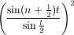

CLM (originally an acronym for Common Lisp Music) is a sound synthesis package in the Music V family. This file describes CLM as implemented in Snd, aiming primarily at the Scheme version. Common Lisp users should check out clm.html in the CLM tarball. CLM is based on a set of functions known as "generators". These can be packaged into "instruments", and instrument calls can be packaged into "note lists". The main emphasis here is on the generators; note lists and instruments are described in sndscm.html.
| related documentation: | snd.html | extsnd.html | grfsnd.html | sndscm.html | fm.html | sndlib.html | libxm.html | index.html |
Contents |
|
| |||||||||||||||||||||||||||||||||||||||||||||||||||||||||||||||||||||||||||||||||||||||||||||||||||||||||||||||||||||||||||||||||||||
|
| |||||||||||||||||||||||||||||||||||||||||||||||||||||||||||||||||||||||||||||||||||||||||||||||||||||||||||||||||||||||||||||||||||||
Introduction |
Start Snd, open the listener (choose "Show listener" in the View menu), and:
>(load "v.scm")
#<unspecified>
>(with-sound () (fm-violin 0 1 440 .1))
"test.snd"
Snd's printout is in blue here, and your typing is in red. The load function returns "#<unspecified>" in Guile to indicate that it is happy. If all went well, you should see a graph of the fm-violin's output. Click the "play" button to hear it; click "f" to see its spectrum.
|
What if this happened instead?
>(load "v.scm")
open-file: system-error: "No such file or directory": "v.scm" (2)
Snd is telling you that "open-file" (presumably part of the load sequence) can't find v.scm. I guess it's on some other directory, so try:
>%load-path
("/usr/local/share/snd" "/usr/local/share/guile/1.9")
"%load-path" is a list of directorties that the "load" function looks at. Apparently these two directories don't have v.scm. So find out where v.scm is ("locate v.scm" is usually the quickest way), and add its directory to %load-path:
>(set! %load-path (cons "/home/bil/cl" %load-path)) ; add the "cl" directory to the search list
#<unspecified>
>(load-from-path "v.scm")
#<unspecified>
|
In Gauche, "load" returns #t if happy, #f if not, and Gauche's name for the directory search list is *load-path*. In Ruby, we'd do it this way:
>load "v.rb"
true
>with_sound() do fm_violin_rb(0, 1.0, 440.0, 0.1) end
#<With_CLM: output: "test.snd", channels: 1, srate: 22050>
and in Forth:
snd> "clm-ins.fs" file-eval
0
snd> 0.0 1.0 440.0 0.1 ' fm-violin with-sound
\ filename: test.snd
In most of this document, I'll stick with Scheme as implemented by Guile. extsnd.html and sndscm.html have numerous Ruby and Forth examples, and I'll toss some in here as I go along. You can save yourself a lot of typing by using two features of the listener. First, <TAB> (that is, the key marked TAB) tries to complete the current name, so if you type "fm-<TAB>" the listener completes the name as "fm-violin". And second, you can back up to a previous expression, edit it, move the cursor to the closing parenthesis, and type <RETURN>, and that expression will be evaluated as if you had typed all of it in from the start. Needless to say, you can paste code from this file into the Snd listener.
with-sound opens an output sound file, evaluates its body, closes the file, and then opens it in Snd. If the sound is already open, with-sound replaces it with the new version. The body of with-sound can be any size, and can include anything that you could put in a function body. For example, to get an arpeggio:
(with-sound ()
(do ((i 0 (1+ i)))
((= i 8))
(fm-violin (* i .25) .5 (* 100 (1+ i)) .1)))
|
If that seemed to take awhile, make sure you've turned on optimization:
>(set! (optimization) 6)
6
The optimizer, a macro named "run", can usually speed up computations by about a factor of 10. |
with-sound, instruments, CLM itself are all optional, of course. We could do everything by hand:
(let ((sound (new-sound "test.snd" :size 22050))
(increment (/ (* 440.0 2.0 pi) 22050.0))
(current-phase 0.0))
(map-channel (lambda (y)
(let ((val (* .1 (sin current-phase))))
(set! current-phase (+ current-phase increment))
val))))
This opens a sound file (via new-sound) and fills it with a .1 amplitude sine wave at 440 Hz. The "increment" calculation turns 440 Hz into a phase increment in radians (we could also use the function hz->radians). The "oscil" generator keeps track of the phase increment for us, so essentially the same thing using with-sound and oscil is:
(with-sound ()
(let ((osc (make-oscil 440.0)))
(do ((i 0 (1+ i)))
((= i 22050))
(outa i (* .1 (oscil osc)) *output*))))
*output* is the file opened by with-sound, and outa is a function that adds its second argument (the sinusoid) into the current output at the sample given by its first argument ("i" in this case). oscil is our sinusoid generator, created by make-oscil. You don't need to worry about freeing the oscil; we can depend on the Scheme garbage collector to deal with that. All the generators are like oscil in that each is a function that on each call returns the next sample in an infinite stream of samples. An oscillator, for example, returns an endless sine wave, one sample at a time. Each generator consists of a set of functions: make-<gen> sets up the data structure associated with the generator; <gen> produces a new sample; <gen>? checks whether a variable is that kind of generator. Current generator state is accessible via various generic functions such as mus-frequency:
(set! oscillator (make-oscil :frequency 330))
prepares "oscillator" to produce a sine wave when set in motion via
(oscil oscillator)
The make-<gen> function takes a number of optional arguments, setting whatever state the given generator needs to operate on. The run-time function's first argument is always its associated structure. Its second argument is nearly always something like an FM input or whatever run-time modulation might be desired. Frequency sweeps of all kinds (vibrato, glissando, breath noise, FM proper) are all forms of frequency modulation. So, in normal usage, our oscillator looks something like:
(oscil oscillator (+ vibrato glissando frequency-modulation))
One special aspect of each make-<gen> function is the way it read its arguments. I use the word optional-key in the function definitions in this document to indicate that the arguments are keywords, but the keywords themselves are optional. Take the make-oscil call, defined as:
make-oscil :optional-key (frequency 440.0) (initial-phase 0.0)
This says that make-oscil has two optional arguments, frequency (in Hz), and initial-phase (in radians). The keywords associated with these values are :frequency and :initial-phase. When make-oscil is called, it scans its arguments; if a keyword is seen, that argument and all following arguments are passed unchanged, but if a value is seen, the corresponding keyword is prepended in the argument list:
(make-oscil :frequency 440.0)
(make-oscil :frequency 440.0 :initial-phase 0.0)
(make-oscil 440.0)
(make-oscil)
(make-oscil 440.0 :initial-phase 0.0)
(make-oscil 440.0 0.0)
are all equivalent, but
(make-oscil :frequency 440.0 0.0)
(make-oscil :initial-phase 0.0 440.0)
are in error, because once we see any keyword, all the rest of the arguments have to use keywords too (we can't reliably make any assumptions after that point about argument ordering).
Since we often want to use a given sound-producing algorithm many times (in a note list, for example), it is convenient to package up that code into a function. Our sinewave could be rewritten:
(define (simp start end freq amp) (let ((os (make-oscil freq))) (do ((i start (1+ i))) ((= i end)) (outa i (* amp (oscil os)) *output*)))) |
Now to hear our sine wave:
(with-sound (:play #t) (simp 0 22050 330 .1))
This version of "simp" forces you to think in terms of sample numbers ("start" and "end") which are dependent on the overall sampling rate changes. Our first enhancement is to use seconds:
(define (simp beg dur freq amp) (let* ((os (make-oscil freq)) (start (seconds->samples beg)) (end (+ start (seconds->samples dur)))) (do ((i start (1+ i))) ((= i end)) (outa i (* amp (oscil os)) *output*)))) |
Now we can use any sampling rate, and call "simp" using seconds:
(with-sound (:srate 44100) (simp 0 1.0 440.0 0.1))
Our next improvement adds the "run" macro to speed up processing by about a factor of 10:
(define (simp beg dur freq amp) (let* ((os (make-oscil freq)) (start (seconds->samples beg)) (end (+ start (seconds->samples dur)))) (run (lambda () (do ((i start (1+ i))) ((= i end)) (outa i (* amp (oscil os)) *output*)))))) |
Next we turn the "simp" function into an "instrument". An instrument is a function that has a variety of built-in actions within with-sound. The only change is the word "definstrument":
(definstrument (simp beg dur freq amp) (let* ((os (make-oscil freq)) (start (seconds->samples beg)) (end (+ start (seconds->samples dur)))) (run (lambda () (do ((i start (1+ i))) ((= i end)) (outa i (* amp (oscil os)) *output*)))))) |
Now we can simulate a telephone:
(define (telephone start telephone-number)
(let ((touch-tab-1 '(0 697 697 697 770 770 770 852 852 852 941 941 941))
(touch-tab-2 '(0 1209 1336 1477 1209 1336 1477 1209 1336 1477 1209 1336 1477)))
(do ((i 0 (1+ i)))
((= i (length telephone-number)))
(let* ((num (list-ref telephone-number i))
(frq1 (list-ref touch-tab-1 num))
(frq2 (list-ref touch-tab-2 num)))
(simp (+ start (* i .4)) .3 frq1 .1)
(simp (+ start (* i .4)) .3 frq2 .1)))))
(with-sound () (telephone 0.0 '(7 2 3 4 9 7 1)))
|
As a last change, let's add an amplitude envelope:
(definstrument (simp beg dur freq amp envelope) (let* ((os (make-oscil freq)) (amp-env (make-env envelope :duration dur :scaler amp)) (start (seconds->samples beg)) (end (+ start (seconds->samples dur)))) (run (lambda () (do ((i start (1+ i))) ((= i end)) (outa i (* (env amp-env) (oscil os)) *output*)))))) |
A CLM envelope is a list of (x y) break-point pairs. The x-axis bounds are arbitrary, but it is conventional (here at ccrma) to go from 0 to 1.0. The y-axis values are normally between -1.0 and 1.0, to make it easier to figure out how to apply the envelope in various different situations.
(with-sound () (simp 0 2 440 .1 '(0 0 0.1 1.0 1.0 0.0)))
Add a few more oscils and envs, and you've got the fm-violin. You can try out a generator or a patch of generators quickly by plugging it into the following with-sound call:
(with-sound ()
(let ((sqr (make-square-wave 100))) ; test a square-wave generator
(do ((i 0 (1+ i)))
((= i 10000))
(outa i (square-wave sqr) *output*))))
|
By the way, there's nothing special about a generator in CLM: it is a function, or perhaps more accurately, a closure. If it happens to restrict itself to functions that the "run" macro can handle (and this includes most of Scheme), then it will run nearly as fast as any built-in function. If it needs to keep on-going state around, it is simplest to use a vct as the generator object:
(define (make-my-oscil frequency) ; we want our own oscil! (vct 0.0 (hz->radians frequency))) ; current phase and frequency-based phase increment (define (my-oscil gen fm) ; the corresponding generator (let ((result (sin (vct-ref gen 0)))) ; return sin(current-phase) (vct-set! gen 0 (+ (vct-ref gen 0) ; increment current phase (vct-ref gen 1) ; by frequency fm)) ; and FM result)) ; return sine wave (with-sound () (run (lambda () (let ((osc (make-my-oscil 440.0))) (do ((i 0 (1+ i))) ((= i 22050)) (outa i (my-oscil osc 0.0) *output*)))))) |
There are many more such generators scattered around the Snd package. For more sophisticated situations, you can use def-clm-struct.
Generators |
oscil |
make-oscil :optional-key (frequency 440.0) (initial-phase 0.0) oscil os :optional (fm-input 0.0) (pm-input 0.0) oscil? os sine-bank amps phases
oscil produces a sine wave (using sin) with optional frequency change (FM). Its first argument is an oscil created by make-oscil. Oscil's second argument is the frequency change (frequency modulation), and the third argument is the phase change (phase modulation). The initial-phase argument to make-oscil is in radians. You can use degrees->radians to convert from degrees to radians. To get a cosine (as opposed to sine), set the initial-phase to (/ pi 2).
sine-bank simply loops through its arrays of amps and phases, summing (* amp (sin phase)) -- it is mostly a convenience function for additive synthesis (the phase-vocoder in particular).
| mus-frequency | frequency in Hz |
| mus-phase | phase in radians |
| mus-cosines | 1 (no set!) |
| mus-increment | frequency in radians per sample |
(let ((result (sin (+ phase pm-input))))
(set! phase (+ phase (hz->radians frequency) fm-input))
result)
One slightly confusing aspect of oscil is that glissando has to be turned into a phase-increment envelope. This means that the frequency envelope y values should be passed through hz->radians:
(define (simp start end freq amp frq-env)
(let ((os (make-oscil freq))
(frqe (make-env frq-env :dur (- end start) :scaler (hz->radians freq))))
(do ((i start (1+ i)))
((= i end))
(outa i (* amp (oscil os (env frqe))) *output*))))
(with-sound () (simp 0 10000 440 .1 '(0 0 1 1))) ; sweep up an octave
|
Here is an example of FM (here the hz->radians business is folded into the FM index):
(definstrument (simple-fm beg dur freq amp mc-ratio index :optional amp-env index-env) (let* ((start (seconds->samples beg)) (end (+ start (seconds->samples dur))) (cr (make-oscil freq)) ; carrier (md (make-oscil (* freq mc-ratio))) ; modulator (fm-index (hz->radians (* index mc-ratio freq))) (ampf (make-env (or amp-env '(0 0 .5 1 1 0)) :scaler amp :duration dur)) (indf (make-env (or index-env '(0 0 .5 1 1 0)) :scaler fm-index :duration dur))) (run (lambda () (do ((i start (1+ i))) ((= i end)) (outa i (* (env ampf) (oscil cr (* (env indf) (oscil md)))) *output*)))))) ;;; (with-sound () (simple-fm 0 1 440 .1 2 1.0)) |
See fm.html for a discussion of FM. The standard additive synthesis instruments use an array of oscillators to create the individual spectral components:
(define (simple-add beg dur freq amp) (let* ((start (seconds->samples beg)) (end (+ start (seconds->samples dur))) (arr (make-vector 20))) ; we'll create a tone with 20 equal amplitude harmonics (do ((i 0 (1+ i))) ; use the 'f' button to check out the spectrum ((= i 20)) (vector-set! arr i (make-oscil (* (1+ i) freq)))) (run (lambda () (do ((i start (1+ i))) ((= i end)) (let ((sum 0.0)) (do ((k 0 (1+ k))) ((= k 20)) (set! sum (+ sum (oscil (vector-ref arr k))))) (out-any i (* amp .05 sum) 0 *output*))))))) ;;; (with-sound () (simple-add 0 1 220 .3)) |
|
To compare the Scheme, Ruby, Forth, and C versions of a CLM instrument (not to mention the Common Lisp version in the CLM tarball), here are versions of the bird instrument; it produces a sinusoid with (usually very elaborate) amplitude and frequency envelopes. | |
| |
| |
| |
|
Related generators are sum-of-cosines, sum-of-sines, asymmetric-fm, sine-summation, and waveshape. Some instruments that use oscil are bird and bigbird, fm-violin (v.ins), lbj-piano (clm-ins.scm), vox (clm-ins.scm), and fm-bell (clm-ins.scm). Interesting extensions of oscil include the various summation formulas in generators.scm (rcos et al). For a sine-bank example, see pvoc.scm. To goof around with FM from a graphical interface, see bess.scm and bess1.scm.
env |
make-env :optional-key
envelope ; list of x,y break-point pairs
(scaler 1.0) ; scaler on every y value (before offset is added)
duration ; seconds
(offset 0.0) ; value added to every y value
base ; type of connecting line between break-points
end ; end point in samples (similar to dur)
dur ; duration in samples (can be used instead of end)
env e
env? e
env-interp x env :optional (base 1.0)
| ||||||||||||||||
An envelope is a list of break point pairs: '(0 0 100 1) is a ramp from 0 to 1 over an x-axis excursion from 0 to 100. This list is passed to make-env along with the scaler applied to the y axis, the offset added to every y value, and the time in samples or seconds that the x axis represents. make-env returns an env generator. env then returns the next sample of the envelope each time it is called. Say we want a ramp moving from .3 to .5 during 1 second.
(make-env '(0 0 100 1) :scaler .2 :offset .3 :duration 1.0)
(make-env '(0 .3 1 .5) :duration 1.0)
I find the second version easier to read. The first is handy if you have a bunch of stored envelopes.
|
The base argument determines how the break-points are connected. If it is 1.0 (the
default), you get straight line segments. If base is 0.0, you get a step
function (the envelope changes its value suddenly to the new one without any
interpolation). Any other positive value affects the exponent of the exponential curve
connecting the points. A base less than 1.0 gives convex curves (i.e. bowed
out), and a base greater than 1.0 gives concave curves (i.e. sagging).
If you'd rather think in terms of e^-kt, set the base to |

|

|
To get arbitrary connecting curves between the break points, treat the output of env as the input to the connecting function. Here's an instrument that maps the line segments into sin x^3:
|

|
Or write a function that traces out the curve you want. J.C.Risset's bell curve could be:
(define (bell-curve x) ;; x from 0.0 to 1.0 creates bell curve between .64e-4 and nearly 1.0 ;; if x goes on from there, you get more bell curves; x can be ;; an envelope (a ramp from 0 to 1 if you want just a bell curve) (+ .64e-4 (* .1565 (- (exp (- 1.0 (cos (* 2 pi x)))) 1.0)))) |
There are many more such functions in the Snd package. See extensions.scm for examples and pictures.
mus-reset of an env causes it to start all over again from the beginning. To jump to any position in an env, use mus-location. Here's a function that uses these methods to apply an envelope over and over:
(define (strum e) (map-channel (lambda (y) (if (> (mus-location e) (mus-length e)) ; mus-length = dur (mus-reset e)) ; start env again (default is to stick at the last value) (* y (env e))))) ;;; (strum (make-env (list 0 0 1 1 10 .6 25 .3 100 0) :end 2000)) |
To copy an env while changing one aspect (say duration), it's simplest to use make-env:
(defun change-env-dur (e dur) (make-env (mus-data e) :scaler (mus-scaler e) :offset (mus-offset e) :base (mus-increment e) :duration dur)) |
env-interp returns the value of the envelope at some point on the x axis.
| Envelopes | |
|---|---|
|
table-lookup |
make-table-lookup :optional-key
(frequency 440.0) ; in Hz
(initial-phase 0.0) ; in radians
wave ; a vct
size ; table size if wave not specified
type ; interpolation type (mus-interp-linear)
table-lookup tl :optional (fm-input 0.0)
table-lookup? tl
table-lookup performs interpolating table lookup with a lookup index that moves
through the table at a speed set by make-table-lookup's "frequency" argument and table-lookup's "fm-input" argument.
That is, the waveform in the table is produced repeatedly, the repetition rate set by the frequency arguments.
Table-lookup scales its
fm-input argument to make its table size appear to be two pi.
The intention here is that table-lookup with a sinusoid in the table and a given FM signal
produces the same output as oscil with that FM signal.
The "type" argument sets the type of interpolation used: mus-interp-none,
mus-interp-linear, mus-interp-lagrange, mus-interp-bezier, or mus-interp-hermite.
| mus-frequency | frequency in Hz |
| mus-phase | phase in radians |
| mus-data | wave vct |
| mus-length | wave size (no set!) |
| mus-interp-type | interpolation choice (no set!) |
| mus-increment | table increment per sample |
(let ((result (array-interp wave phase))) (set! phase (+ phase (hz->radians frequency) (* fm-input (/ (length wave) (* 2 pi))))) result)
In the past, table-lookup was often used for additive synthesis, so there are two functions that make it easier to load up various such waveforms:
partials->wave synth-data :optional wave-vct (norm #t) phase-partials->wave synth-data :optional wave-vct (norm #t)
The "synth-data" argument is a list of (partial amp) pairs: '(1 .5 2 .25) gives a combination of a sine wave at the carrier (partial = 1) at amplitude .5, and another at the first harmonic (partial = 2) at amplitude .25. The partial amplitudes are normalized to sum to a total amplitude of 1.0 unless the argument "norm" is #f. If the initial phases matter (they almost never do), you can use phase-partials->wave; in this case the synth-data is a list of (partial amp phase) triples with phases in radians. If "wave-vct" is not passed, these functions return a new vct.
(definstrument (simple-table dur) (let ((tab (make-table-lookup :wave (partials->wave '(1 .5 2 .5))))) (do ((i 0 (1+ i))) ((= i dur)) (outa i (* .3 (table-lookup tab)) *output*)))) |
table-lookup can also be used as a sort of "freeze" function, looping through a sound repeatedly, based on some previously chosen loop positions:
(define (looper start dur sound freq amp) (let* ((beg (seconds->samples start)) (end (+ beg (seconds->samples dur))) (loop-data (mus-sound-loop-info sound))) (if (or (null? loop-data) (<= (cadr loop-data) (car loop-data))) (throw 'no-loop-positions) (let* ((loop-start (car loop-data)) (loop-end (cadr loop-data)) (loop-length (1+ (- loop-end loop-start))) (sound-section (file->array sound 0 loop-start loop-length (make-vct loop-length))) (original-loop-duration (/ loop-length (mus-sound-srate sound))) (tbl (make-table-lookup :frequency (/ freq original-loop-duration) :wave sound-section))) ;; "freq" here is how fast we read (transpose) the sound -- 1.0 returns the original (run (lambda () (do ((i beg (1+ i))) ((= i end)) (outa i (* amp (table-lookup tbl)) *output*)))))))) (with-sound (:srate 44100) (looper 0 10 "/home/bil/sf1/forest.aiff" 1.0 0.5)) |
And for total confusion, here's a table-lookup that modulates a sound where we specify the modulation deviation in samples:
(definstrument (fm-table file start dur amp read-speed modulator-freq index-in-samples) (let* ((beg (seconds->samples start)) (end (+ beg (seconds->samples dur))) (table-length (mus-sound-frames file)) (tab (make-table-lookup :frequency (/ read-speed (mus-sound-duration file)) :wave (file->array file 0 0 table-length (make-vct table-length)))) (osc (make-oscil modulator-freq)) (index (/ (* (hz->radians modulator-freq) 2 pi index-in-samples) table-length))) (run (lambda () (do ((i beg (1+ i))) ((= i end)) (outa i (* amp (table-lookup tab (* index (oscil osc)))) *output*)))))) |
Lessee.. there's a factor of table-length/(2*pi) in table-lookup, so that a table with a sinusoid behaves the same as an oscil even with FM; hz->radians adds a factor of (2*pi)/srate; so we've cancelled the internal 2*pi and table-length, and we have an actual deviation of mfreq*2*pi*index/srate, which looks like FM; hmmm. See srcer below for an src-based way to do the same thing.
spectr.clm has a steady state spectra of several standard orchestral instruments, courtesy of James A. Moorer. The drone instrument in clm-ins.scm uses table-lookup for the bagpipe drone. two-tab in the same file interpolates between two tables. See also grani and display-scanned-synthesis.
waveshape |
make-waveshape :optional-key (frequency 440.0) (partials '(1 1)) wave size
waveshape w :optional (index 1.0) (fm 0.0)
waveshape? w
make-polyshape :optional-key
(frequency 440.0) (initial-phase 0.0) coeffs
(partials '(1 1))
(kind mus-chebyshev-first-kind)
polyshape w :optional (index 1.0) (fm 0.0)
polyshape? w
partials->waveshape :optional-key partials (size *clm-table-size*)
partials->polynomial partials :optional (kind mus-chebyshev-first-kind)
waveshape and polyshape perform waveshaping; waveshaping drives a sum of Chebyshev polynomials with a sinusoid, creating a sort of cross between additive synthesis and FM; see "Digital Waveshaping Synthesis" by Marc Le Brun in JAES 1979 April, vol 27, no 4, p250. The basic idea is:

So, we can add scaled polynomials to get the spectrum we want; in the simplest use, an inexpensive additive synthesis. We can vary the peak amplitude of the cos x to get effects similar to those of FM.
waveshape uses an internal table-lookup generator, whereas polyshape uses the polynomial function. The "kind" argument determines which kind of Chebyshev polynomial is used internally: mus-chebyshev-first-kind or mus-chebyshev-second-kind. (The sum-of-cosines generator produces Chebyshev polynomials of the fourth kind).
| mus-frequency | frequency in Hz |
| mus-phase | phase in radians |
| mus-data | wave vct (no set!) |
| mus-length | wave size (no set!) |
| mus-increment | frequency in radians per sample |
(let ((result (array-interp wave (* (length wave) (+ 0.5 (* index 0.5 (sin phase))))))) (set! phase (+ phase (hz->radians frequency) fm)) result) (let ((result (polynomial wave (sin phase)))) (set! phase (+ phase (hz->radians frequency) fm)) result)
In its simplest use, waveshaping is additive synthesis:
(definstrument (simp) (let ((wav (make-waveshape :frequency 440 :partials '(1 .5 2 .3 3 .2)))) (do ((i 0 (1+ i))) ((= i 10000)) (outa i (waveshape wav) *output*)))) |
we can also use partials->polynomial with polyshape; bigbird is an example:
(definstrument (bigbird start duration frequency freqskew amplitude freq-env amp-env partials) (let* ((beg (seconds->samples start)) (end (+ beg (seconds->samples duration))) (gls-env (make-env freq-env (hz->radians freqskew) duration)) (polyos (make-polyshape frequency :coeffs (partials->polynomial partials))) (fil (make-one-pole .1 .9)) (amp-env (make-env amp-env amplitude duration))) (run (lambda () (do ((i beg (1+ i))) ((= i end)) (outa i (one-pole fil ; for distance effects (* (env amp-env) (polyshape polyos 1.0 (env gls-env)))) *output*)))))) (with-sound () (bigbird 0 .05 1800 1800 .2 '(.00 .00 .40 1.00 .60 1.00 1.00 .0) ; freq env '(.00 .00 .25 1.00 .60 .70 .75 1.00 1.00 .0) ; amp env '(1 .5 2 1 3 .5 4 .1 5 .01))) ; bird song spectrum |
partials->waveshape with waveshape produces the same output as partials->polynomial with polyshape. The fm-violin uses polyshape for the multiple FM section in some cases. We can get single side-band spectra by using Chebyshev polynomials of the second kind. The pqw and pqwvox instruments use this technique. Here is a simplified example:
(definstrument (pqw start dur spacing carrier partials) (let* ((spacing-cos (make-oscil spacing (/ pi 2.0))) (spacing-sin (make-oscil spacing)) (carrier-cos (make-oscil carrier (/ pi 2.0))) (carrier-sin (make-oscil carrier)) (sin-coeffs (partials->polynomial partials mus-chebyshev-second-kind)) (cos-coeffs (partials->polynomial partials mus-chebyshev-first-kind)) (beg (seconds->samples start)) (end (+ beg (seconds->samples dur)))) (run (lambda () (do ((i beg (1+ i))) ((= i end)) (let ((ax (oscil spacing-cos))) (outa i (- (* (oscil carrier-sin) (oscil spacing-sin) (polynomial sin-coeffs ax)) (* (oscil carrier-cos) (polynomial cos-coeffs ax))) *output*))))))) (with-sound () (pqw 0 1 200.0 1000.0 '(2 .2 3 .3 6 .5))) |
We can use waveshaping to make a band-limited triangle-wave:
(def-optkey-fun (make-band-limited-triangle-wave (frequency 440.0) (order 1))
(let ((freqs '()))
(do ((i 1 (1+ i))
(j 1 (+ j 2)))
((> i order))
(set! freqs (cons (/ 1.0 (* j j)) (cons j freqs))))
(make-waveshape frequency :wave (partials->waveshape (reverse freqs)))))
(define* (band-limited-triangle-wave gen :optional (fm 0.0))
(waveshape gen 1.0 fm))
|
Band-limited square or sawtooth waves need sines (as opposed to cosines), so if we absolutely insist on using waveshaping, we could do it this way:
(definstrument (bl-saw start dur frequency order) (let* ((norm (if (= order 1) 1.0 ; these peak amps were determined empirically (if (= order 2) 1.3 ; actual limit is supposed to be pi/2 (G&R 1.441) (if (< order 9) 1.7 ; but Gibbs phenomenon pushes it to 1.851 1.9)))) ; if order>25, numerical troubles -- use table-lookup (freqs '())) (do ((i 1 (1+ i))) ((> i order)) (set! freqs (cons (/ 1.0 (* norm i)) (cons i freqs)))) (let* ((ccos (make-oscil frequency (/ pi 2.0))) (csin (make-oscil frequency)) (coeffs (partials->polynomial (reverse freqs) mus-chebyshev-second-kind)) (beg (seconds->samples start)) (end (+ beg (seconds->samples dur)))) (run (lambda () (do ((i beg (1+ i))) ((= i end)) (outa i (* (oscil csin) (polynomial coeffs (oscil ccos))) *output*))))))) |
Why does the high order give numerical problems? The polynomials are related to each other
via the recursion:  , so the first
few polynomials are:
, so the first
few polynomials are:
 |
The first coefficient is 2^n or 2^(n-1). This is bad news if "n" is large because we are expecting a bunch of huge numbers to add up to something in the vicinity of 0.0 or 1.0. If we're using 32-bit floats, the first sign of trouble comes when the order is around 26. If you look at some of the coefficients, you'll see numbers like -129026688.000 (in the 32 bit case), which should be -129026680.721 -- we have run out of bits in the mantissa! Even if we build Snd --with-doubles, we can only push the order up to around 46.
sawtooth-wave, triangle-wave, pulse-train, square-wave |
make-triangle-wave :optional-key (frequency 440.0) (amplitude 1.0) (initial-phase pi) triangle-wave s :optional (fm 0.0) triangle-wave? s make-square-wave :optional-key (frequency 440.0) (amplitude 1.0) (initial-phase 0) square-wave s :optional (fm 0.0) square-wave? s make-sawtooth-wave :optional-key (frequency 440.0) (amplitude 1.0) (initial-phase pi) sawtooth-wave s :optional (fm 0.0) sawtooth-wave? s make-pulse-train :optional-key (frequency 440.0) (amplitude 1.0) (initial-phase (* 2 pi)) pulse-train s :optional (fm 0.0) pulse-train? s
| mus-frequency | frequency in Hz |
| mus-phase | phase in radians |
| mus-scaler | amplitude arg used in make-<gen> |
| mus-width | width of square-wave pulse (0.0 to 1.0) |
| mus-increment | frequency in radians per sample |
One popular kind of vibrato is: (+ (triangle-wave pervib) (rand-interp ranvib))
These generators produce some standard old-timey wave forms that are still occasionally useful (well, triangle-wave
is useful; the others are silly).
sawtooth-wave ramps from -1 to 1, then goes immediately back to -1.
Use a negative frequency to turn the "teeth" the other way.
triangle-wave ramps from -1 to 1, then ramps from 1 to -1.
pulse-train produces a single sample of 1.0, then zeros.
square-wave produces 1 for half a period, then 0. All have a period
of two pi, so the "fm" argument should have an effect comparable to the
same FM applied to the same waveform in table-lookup.
These do not produce band-limited output; if the frequency is too high, you can get foldover.
A more reasonable square-wave can be generated via
(tanh (* n (sin theta))), where "n" (a float) sets how squared-off it is:

|
|
The spectrum of tanh(sin) can be obtained by expanding tanh as a power series: plugging in "sin" for "x", expanding the sine powers, and collecting terms (very tedious!): which is promising since a square wave is made up of odd harmonics with amplitude 1/n. As the "n" in tanh(n sin(x)) increases, this series doesn't apply, but we can check the formula for tanh, and see that the e^-x term will vanish (in the positive x case), giving 1.0. So we do get a square wave, but it's not band limited. If a complex signal replaces the sin(x), we get "intermodulation products" (sum and difference tones). (It is reassuring after all that arithmetic that 13319/241920 / 140069/172800 is 0.068 -- we got .070 in the fft above, and 1973/483840 / 140069/172800 is 0.005 -- we got .006). |
Another choice is ecos in generators.scm, based on atan; as its "a" parameter approaches 0.0, you get closer to a square wave. Even more amusing is this algorithm:
(define (cossq c theta) ; as c -> 1.0+, more of a square wave (try 1.00001)
(let* ((cs (cos theta)) ; (+ theta pi) if matching sin case (or (- ...))
(cp1 (+ c 1.0))
(cm1 (- c 1.0))
(cm1c (expt cm1 cs))
(cp1c (expt cp1 cs)))
(/ (- cp1c cm1c)
(+ cp1c cm1c)))) ; from "From Squares to Circles..." Lasters and Sharpe, Math Spectrum 38:2
(define (sinsq c theta) (cossq c (- theta (* 0.5 pi))))
(define (sqsq c theta) (sinsq c (- (sinsq c theta)))) ; a sharper square wave
(let ((angle 0.0))
(map-channel (lambda (y)
(let ((val (* 0.5 (+ 1.0 (sqsq 1.001 angle)))))
(set! angle (+ angle .02))
val))))
|
In these generators, the "fm" argument is useful mainly for various sci-fi sound effects:
(define (tritri start dur freq amp index mcr) (let* ((beg (seconds->samples start)) (end (+ beg (seconds->samples dur))) (carrier (make-triangle-wave freq)) (modulator (make-triangle-wave (* mcr freq)))) (run (lambda () (do ((i beg (1+ i))) ((= i end)) (outa i (* amp (triangle-wave carrier (* index (triangle-wave modulator)))) *output*)))))) (with-sound (:srate 44100) (tritri 0 1 1000.0 0.5 0.1 0.01)) ; sci-fi laser gun (with-sound (:srate 44100) (tritri 0 1 4000.0 0.7 0.1 0.01)) ; a sparrow? |
I think just about every combination of oscil/triangle-wave/sawtooth-wave/square-wave has been used. Even triangle-wave(square-wave) can make funny noises. Along these lines, there's a band-limited sawtooth generator in generators.scm, band-limited-triangle-wave above (waveshaping), and band-limited pulse-train via sum-of-cosines.
sum-of-cosines |
make-sum-of-cosines :optional-key (cosines 1) (frequency 440.0) (initial-phase 0.0) sum-of-cosines cs :optional (fm 0.0) sum-of-cosines? cs
sum-of-cosines produces a band-limited pulse train containing "cosines" cosines. I think this was originally viewed as a way to get a speech-oriented pulse train that would then be passed through formant filters (see pulse-voice in examp.scm). There are many similar formulas: see fejer and friends in generators.scm. "Trigonometric Delights" by Eli Maor has a derivation of a sum-of-sines formula and a neat geometric explanation. For a derivation of the sum-of-cosines formula, see "Fourier Analysis" by Stein and Shakarchi, or (in the formula given below) multiply the left side (the cosines) by sin(x/2), use the trig formula 2sin(a)cos(b) = sin(b+a)-sin(b-a), and notice that all the terms in the series cancel except the last.
| mus-frequency | frequency in Hz |
| mus-phase | phase in radians |
| mus-scaler | (/ 1.0 cosines) |
| mus-cosines | cosines arg used in make-<gen> |
| mus-length | same as mus-cosines |
| mus-increment | frequency in radians per sample |
based on:known as the Dirichlet kernel see also cosine-summation, fejer-sum, etc in dsp.scm
(define (simple-soc beg dur freq amp) (let* ((os (make-sum-of-cosines 10 freq 0.0)) (start (seconds->samples beg)) (end (+ start (seconds->samples dur)))) (run (lambda () (do ((i start (1+ i))) ((= i end)) (outa i (* amp (sum-of-cosines os)) *output*)))))) (with-sound () (simple-soc 0 1 100 1.0)) |
Almost identical is the following sinc-train generator:
(define* (make-sinc-train :optional (frequency 440.0) (width #f)) (let ((range (or width (* pi (- (* 2 (inexact->exact (floor (/ (mus-srate) (* 2.2 frequency))))) 1))))) ;; 2.2 leaves a bit of space before srate/2, (* 3 pi) is the minimum width, normally (list (- (* range 0.5)) range (/ (* range frequency) (mus-srate))))) (define* (sinc-train gen :optional (fm 0.0)) (let* ((ang (car gen)) (range (cadr gen)) (top (* 0.5 range)) (frq (caddr gen)) (val (if (= ang 0.0) 1.0 (/ (sin ang) ang))) (new-ang (+ ang frq fm))) (if (> new-ang top) (list-set! gen 0 (- new-ang range)) (list-set! gen 0 new-ang)) val)) |
If you sweep sum-of-cosines upwards in frequency, you'll eventually get foldover; the generator produces its preset number of cosines no matter what. It is possible to vary the spectrum smoothly:
(let ((os (make-sum-of-cosines 4 100.0))
(pow (make-env '(0 1.0 1 30.0) :end 10000))) ; our "index" envelope in FM jargon
(map-channel (lambda (y)
(let ((val (sum-of-cosines os 0.0)))
(* (signum val)
(expt (abs val) (env pow)))))))
|
This trick works on all the pulse-train functions in generators.scm (or an oscil for that matter!), but perhaps a filter is a simpler approach. There are a lot more of these "kernels" in generators.scm.
 |
||
 |
 |
 |
sine-summation |
make-sine-summation :optional-key (frequency 440.0) (initial-phase 0.0) (n 1) (a .5) (ratio 1.0) sine-summation s :optional (fm 0.0) sine-summation? s
| mus-frequency | frequency in Hz |
| mus-phase | phase in radians |
| mus-scaler | "a" parameter; sideband scaler |
| mus-cosines | "n" parameter |
| mus-increment | frequency in radians per sample |
| mus-offset | "ratio" parameter |
based on:
sine-summation produces a kind of additive synthesis. See J.A.Moorer, "Signal Processing Aspects of Computer Music" and "The Synthesis of Complex Audio Spectra by means of Discrete Summation Formulae" (Stan-M-5). "n" is the number of sidebands (0 gives a sine wave), "a" is the amplitude ratio between successive sidebands (don't set it to 1.0), and "ratio" is the ratio between the carrier frequency and the spacing between successive sidebands. A "ratio" of 2 would give odd-numbered harmonics for a (vaguely) clarinet-like sound. The basic idea is very similar to that used in the sum-of-cosines generator, but you have control of the fall-off of the spectrum and the spacing of the partials.
The peak amplitude of this generator is very hard to predict, and Moorer's suggested normalization is not helpful. See the code (clm.c) for a long comment. If "a" < 1.0, the output will never go over 1.0, but it also will almost never reach that peak either. Besides the usual FM input, you can also vary the "a" parameter (via mus-scaler) to get changing spectra. In the next example, we add a glissando envelope, and use the same envelope to vary "a" so that as the frequency goes up, "a" goes down (to avoid foldover, or whatever).
(definstrument (ss beg dur freq amp :optional (N 1) (a .5) (B-ratio 1.0) (frqf #f)) (let* ((st (seconds->samples beg)) (nd (+ st (seconds->samples dur))) (sgen (make-sine-summation :n N :a a :ratio B-ratio :frequency freq)) (frq-env (if frqf (make-env frqf :scaler (hz->radians freq) :duration dur) #f)) (spectr-env (if frqf (make-env frqf :duration dur) #f)) (amp-env (make-env '(0 0 1 1 2 1 3 0) :scaler amp :duration dur))) (run (lambda () (do ((i st (1+ i))) ((= i nd)) (if spectr-env (set! (mus-scaler sgen) (* a (exp (- (env spectr-env)))))) (outa i (* (env amp-env) (sine-summation sgen (if frq-env (env frq-env) 0.0))) *output*)))))) (with-sound () (ss 0 1 400.0 1.0 5 0.5 1.0 '(0 0 1 2))) |
There are some surprising sounds lurking in this generator; a sonata for moped, anyone?
sum-of-sines |
make-sum-of-sines :optional-key (sines 1) (frequency 440.0) (initial-phase 0.0) sum-of-sines cs :optional (fm 0.0) sum-of-sines? cs
sum-of-sines produces a sum of sines. It is very similar (good and bad) to sum-of-cosines.
| mus-frequency | frequency in Hz |
| mus-phase | phase in radians |
| mus-scaler | dependent on number of sines |
| mus-cosines | sines arg used in make-<gen> |
| mus-length | same as mus-cosines |
| mus-increment | frequency in radians per sample |
based on: known as the conjugate Dirichlet kernel
See also the sine-summation generator, and generators.scm. The original motivation for this generator was the restriction that the sine-summation generator's ratio ("a") can't be 1.0. But it's so easy to define a generator, that I'm sorry I made sum-of-sines a built-in case. For example, here is a generator based on a formula giving a sum of n odd sines:
(define (make-sum-of-odd-sines frequency n) (vct 0.0 (hz->radians frequency) (exact->inexact n))) (define (sum-of-odd-sines gen fm) (let* ((angle (vct-ref gen 0)) (a2 (* angle 0.5)) (n (vct-ref gen 2)) (den (* n (sin a2))) (result (if (< (abs den) 1.0e-9) 0.0 (/ (* (sin (* n a2)) (sin (* (1+ n) a2))) den)))) (vct-set! gen 0 (+ (vct-ref gen 0) (vct-ref gen 1) fm)) result)) |
| ||||||||||||||||||||||||||||||||||||
A few of these exist as generators, but, as far as I know, most have never been explored. Don't shy away from the sums to infinity just because you've heard shouting about "band-limited waveforms" -- FM is also such a sum:
|
It is not hard to goof around with formulas like these; take the last one in the G&R section:
(def-clm-struct (expcs :make-wrapper (lambda (g) (if (<= (expcs-et g) 0.0) (set! (expcs-et g) 0.00001)) (set! (expcs-frequency g) (hz->radians (expcs-frequency g))) (set! (expcs-sinht g) (* 0.5 (sinh (expcs-et g)))) (set! (expcs-cosht g) (cosh (expcs-et g))) g)) frequency phase et sinht cosht) (define (expcs gen fm) (declare (gen expcs) (fm float)) (let ((result (- (/ (expcs-sinht gen) (- (expcs-cosht gen) (cos (expcs-phase gen)))) 0.5))) (set! (expcs-phase gen) (+ (expcs-phase gen) (expcs-frequency gen) fm)) result)) ;; see if it generates cosines at amplitudes (exp (- (* k t))) (with-sound () (let ((gen (make-expcs :frequency 100 :et 1.0))) (do ((i 0 (1+ i))) ((= i 10000)) (outa i (expcs gen 0.0) *output*)))) ;; change "t" during note -- smoothly changing sum-of-cosines spectra (with-sound () (let ((gen (make-expcs :frequency 100 :et 0.1)) (t-env (make-env '(0 .1 1 2) :end 10000))) (run (lambda () (do ((i 0 (1+ i))) ((= i 10000)) (let ((et (env t-env))) (set! (expcs-sinht gen) (* 0.5 (sinh et))) (set! (expcs-cosht gen) (cosh et)) (outa i (expcs gen 0.0) *output*))))))) |
By the way, the amplitude normalization factor for this generator is:
(/ (- 1.0 (exp (- (expcs-et gen))))
(exp (- (expcs-et gen))))
which can be folded into the original at no run-time cost. See generators.scm for some of these in an undigested state. As J. A. Moorer and Marc Le Brun pointed out eons ago, there are many more such formulas "buried in reference works". Well, they've done nobody any good being buried for a generation, so I say: dig them up! If you know of any curious formula, anything that might trigger an interesting train of reflection, send it to me, and I'll add it to this collection.
ssb-am |
make-ssb-am :optional-key (frequency 440.0) (order 40) ssb-am gen :optional (insig 0.0) (fm 0.0) ssb-am? gen
ssb-am provides single sideband suppressed carrier amplitude modulation, normally used for frequency shifting. The basic notion is to shift a spectrum up or down while cancelling either the upper or lower half of the spectrum. See dsp.scm for a number of curious possibilities (time stretch without pitch shift for example). When this works, which it does more often than I expected, it is much better than the equivalent phase-vocoder or granular synthesis kludges.
| mus-frequency | frequency in Hz |
| mus-phase | phase (of embedded sin osc) in radians |
| mus-order | embedded delay line size |
| mus-cosines | 1 |
| mus-length | same as mus-order |
| mus-interp-type | mus-interp-none |
| mus-xcoeff | FIR filter coeff |
| mus-xcoeffs | embedded Hilbert transform FIR filter coeffs |
| mus-data | embedded filter state |
| mus-increment | frequency in radians per sample |
(define* (ssb-am freq :optional (order 40))
;; higher order = better cancellation
(let* ((car-freq (abs freq))
(cos-car (make-oscil car-freq (* .5 pi)))
(sin-car (make-oscil car-freq))
(dly (make-delay order))
(hlb (make-hilbert-transform order)))
(map-channel
(lambda (y)
(let ((ccos (oscil cos-car))
(csin (oscil sin-car))
(yh (hilbert-transform hlb y))
(yd (delay dly y)))
(if (> freq 0.0)
(- (* ccos yd) ; shift up
(* csin yh))
(+ (* ccos yd) ; shift down
(* csin yh))))))))
(definstrument (shift-pitch beg dur file freq :optional (order 40)) (let* ((st (seconds->samples beg)) (nd (+ st (seconds->samples dur))) (gen (make-ssb-am freq order)) (rd (make-readin file))) (run (lambda () (do ((i st (1+ i))) ((= i nd)) (outa i (ssb-am gen (readin rd)) *output*)))))) (with-sound () (shift-pitch 0 3 "oboe.snd" 1108.0)) |
Normal amplitude modulation, cos(x) * (amp + Y(t)), where Y is some signal, produces the carrier (cos(x)), and symmetric sidebands at x+/-frq where frq is each spectral component of Y. This is just an elaboration of
cos(x) * (amp + cos(y)) = amp * cos(x) + 1/2(cos(x - y) + cos(x + y))
So, the Y spectrum (the first picture below) is shifted up by cos(x) and mirrored on either side of it (the second picture below; the spectral components on the left side are folding under 0). In single side-band AM, we create both the Y spectrum, and, via the hilbert transform, a version of Y in which the phases are shifted too. Then we can add these two copies, using the phase differences to cancel one side of the symmetric spectrum (this is the third picture below; the new spectral components are not harmonically related however). Once we can shift a pitch without creating its symmetric twin, we can split a spectrum into many bands, shift each band separately, and thereby retain its original harmonic spacing (the fourth picture). We have the original, but at a higher pitch. If we then use src to convert it back to its pre-shift pitch, we have the original, but with a different length. We have decoupled the pitch from the duration, much as in a phase vocoder (which uses an FFT rather than a filter bank, and an inverse FFT of the moved spectrum, rather than ssb-am).
|
The second picture was created from oboe.snd (the original) via:
(let ((osc (make-oscil 1000.0)))
(map-channel
(lambda (y)
(* .5 (amplitude-modulate .01 (oscil osc) y)))))
The third picture was created by:
(let ((am (make-ssb-am 1000 40)))
(map-channel
(lambda (y)
(ssb-am am y))))
And the fourth used the ssb-am-bank function in dsp.scm rewritten here for with-sound:
(definstrument (repitch beg dur sound old-freq new-freq :optional (amp 1.0) (pairs 10) (order 40) (bw 50.0)) (let* ((start (seconds->samples beg)) (end (+ start (seconds->samples dur))) (ssbs (make-vector pairs)) (bands (make-vector pairs)) (factor (/ (- new-freq old-freq) old-freq)) (rd (make-readin sound))) (do ((i 1 (1+ i))) ((> i pairs)) (let* ((aff (* i old-freq)) (bwf (* bw (+ 1.0 (/ i (* 2 pairs)))))) (vector-set! ssbs (1- i) (make-ssb-am (* i factor old-freq))) (vector-set! bands (1- i) (make-bandpass (hz->radians (- aff bwf)) (hz->radians (+ aff bwf)) order)))) (run (lambda () (do ((i start (1+ i))) ((= i end)) (let ((sum 0.0) (y (readin rd))) (do ((band 0 (1+ band))) ((= band pairs)) (set! sum (+ sum (ssb-am (vector-ref ssbs band) (bandpass (vector-ref bands band) y))))) (outa i (* amp sum) *output*))))))) (let* ((sound "oboe.snd") (mx (cadr (mus-sound-maxamp sound))) (dur (mus-sound-duration sound))) (with-sound (:scaled-to mx) (repitch 0 dur sound 554 1000))) |
wave-train |
make-wave-train :optional-key (frequency 440.0) (initial-phase 0.0) wave size type wave-train w :optional (fm 0.0) wave-train? w
wave-train adds a copy its "wave" (a "grain" in more modern parlance) into its output at "frequency" times per second. These copies can overlap or have long intervals of silence in between, so wave train can be viewed either as an extension of pulse-train and table-lookup, or as a primitive form of granular synthesis.
| mus-frequency | frequency in Hz |
| mus-phase | phase in radians |
| mus-data | wave array (no set!) |
| mus-length | length of wave array (no set!) |
| mus-interp-type | interpolation choice (no set!) |
With some simple envelopes or filters, you can use this for VOSIM and other related techniques. Here is a FOF instrument based loosely on fof.c of Perry Cook and the article "Synthesis of the Singing Voice" by Bennett and Rodet in "Current Directions in Computer Music Research".
(definstrument (fofins beg dur frq amp vib f0 a0 f1 a1 f2 a2 :optional ve ae) (let* ((start (seconds->samples beg)) (end (+ start (seconds->samples dur))) (ampf (make-env (or ae (list 0 0 25 1 75 1 100 0)) :scaler amp :duration dur)) (frq0 (hz->radians f0)) (frq1 (hz->radians f1)) (frq2 (hz->radians f2)) (foflen (if (= (mus-srate) 22050) 100 200)) (vibr (make-oscil 6)) (vibenv (make-env (or ve (list 0 1 100 1)) :scaler vib :duration dur)) (win-freq (/ (* 2 pi) foflen)) (foftab (make-vct foflen)) (wt0 (make-wave-train :wave foftab :frequency frq))) (do ((i 0 (1+ i))) ((= i foflen)) (set! (vct-ref foftab i) ;; this is not the pulse shape used by B&R (* (+ (* a0 (sin (* i frq0))) (* a1 (sin (* i frq1))) (* a2 (sin (* i frq2)))) .5 (- 1.0 (cos (* i win-freq)))))) (run (lambda () (do ((i start (1+ i))) ((= i end)) (outa i (* (env ampf) (wave-train wt0 (* (env vibenv) (oscil vibr)))) *output*)))))) (with-sound () (fofins 0 1 270 .2 .001 730 .6 1090 .3 2440 .1)) ; "Ahh" (with-sound () ; one of JC's favorite demos (fofins 0 4 270 .2 0.005 730 .6 1090 .3 2440 .1 '(0 0 40 0 75 .2 100 1) '(0 0 .5 1 3 .5 10 .2 20 .1 50 .1 60 .2 85 1 100 0)) (fofins 0 4 (* 6/5 540) .2 0.005 730 .6 1090 .3 2440 .1 '(0 0 40 0 75 .2 100 1) '(0 0 .5 .5 3 .25 6 .1 10 .1 50 .1 60 .2 85 1 100 0)) (fofins 0 4 135 .2 0.005 730 .6 1090 .3 2440 .1 '(0 0 40 0 75 .2 100 1) '(0 0 1 3 3 1 6 .2 10 .1 50 .1 60 .2 85 1 100 0))) |
The "wave" is a vct accessible via mus-data. The "fm" argument affects the frequency of repetition. Here is a wave-train instrument that increasingly filters its grain (the word "now", for example) while increasing the repetition rate. We're also using a pulse train as a sort of internal click track, using the same frequency envelope as the wave-train, so we have some idea when to refilter the grain.
(definstrument (when? start-time duration start-freq end-freq grain-file) (let* ((beg (seconds->samples start-time)) (len (seconds->samples duration)) (end (+ beg len)) (grain-dur (mus-sound-duration grain-file)) (frqf (make-env '(0 0 1 1) :scaler (hz->radians (- end-freq start-freq)) :duration duration)) (click-track (make-pulse-train start-freq)) (grain-size (seconds->samples grain-dur)) (grains (make-wave-train :size grain-size :frequency start-freq)) (ampf (make-env '(0 1 1 0) :scaler .7 :offset .3 :duration duration :base 3.0)) (grain (mus-data grains))) (file->array grain-file 0 0 grain-size grain) (let ((original-grain (vct-copy grain))) (run (lambda () (do ((i beg (1+ i))) ((= i end)) (let* ((gliss (env frqf))) (outa i (* (env ampf) (wave-train grains gliss)) *output*) (let ((click (pulse-train click-track gliss))) (if (> click 0.0) (let* ((scaler (max 0.1 (exact->inexact (/ (- i beg) len)))) (comb-len 32) (c1 (make-comb scaler comb-len)) (c2 (make-comb scaler (inexact->exact (floor (* comb-len .75))))) (c3 (make-comb scaler (inexact->exact (floor (* comb-len 1.25)))))) (do ((k 0 (1+ k))) ((= k grain-size)) (let ((x (vct-ref original-grain k))) (vct-set! grain k (+ (comb c1 x) (comb c2 x) (comb c3 x))))))))))))))) (with-sound () (when? 0 4 2.0 8.0 "right-now.snd")) |
rand, rand-interp |
make-rand :optional-key
(frequency 440.0) ; frequency at which new random numbers occur
(amplitude 1.0) ; numbers are between -amplitude and amplitude
(envelope '(-1 1 1 1)) ; distribution envelope (uniform distribution is the default)
distribution ; pre-computed distribution
rand r :optional (sweep 0.0)
rand? r
make-rand-interp :optional-key
(frequency 440.0)
(amplitude 1.0)
(envelope '(-1 1 1 1)
distribution)
rand-interp r :optional (sweep 0.0)
rand-interp? r
mus-random amp
mus-rand-seed
rand produces a sequence of random numbers between -amplitude and amplitude (a sort of step function). rand-interp interpolates between successive random numbers. rand-interp could be defined as (moving-average agen (rand rgen)) where the averager has the same period (length) as the rand. In both cases, the "envelope" argument or the "distribution" argument determines the random number distribution. mus-random returns a random number between -amplitude and amplitude. mus-rand-seed provides access to the seed for mus-random's random number generator.
| mus-frequency | frequency in Hz |
| mus-phase | phase in radians |
| mus-scaler | amplitude arg used in make-<gen> |
| mus-length | distribution table (vct) length |
| mus-data | distribution table (vct), if any |
| mus-increment | frequency in radians per sample |
rand: (if (>= phase (* 2 pi)) (set! output (mus-random amplitude))) (set! phase (+ phase (hz->radians frequency) sweep))
There are a variety of ways to get a non-uniform random number distribution:
(random (random 1.0)) or (sin (mus-random pi)) are simple examples. Exponential distribution could be:
(/ (log (max .01 (random 1.0))) (log .01))
where the ".01"'s affect how tightly the resultant values cluster toward 0.0 -- set them to .0001, for example, to get most of the random values close to 0.0. The central-limit theorem says that you can get closer and closer to gaussian noise simply by adding rand's together. Orfanidis in "Introduction to Signal Processing" says 12 calls on rand will do perfectly well:
(define (gaussian-noise)
(let ((val 0.0))
(do ((i 0 (1+ i)))
((= i 12) (/ val 12.0) )
(set! val (+ val (random 1.0))))))
You can watch this (or any other distribution) in action via:
(define (add-rands n)
(let ((bins (make-vector 201 0))
(rands (make-vector n #f)))
(do ((i 0 (1+ i)))
((= i n))
(vector-set! rands i (make-rand :frequency (mus-srate) :amplitude (/ 100 n)))
(rand (vector-ref rands i)))
(do ((i 0 (1+ i)))
((= i 100000))
(let ((sum 0.0))
(do ((k 0 (1+ k)))
((= k n))
(set! sum (+ sum (rand (vector-ref rands k)))))
(let ((bin (inexact->exact (+ 100 (round sum)))))
(vector-set! bins bin (+ (vector-ref bins bin) 1)))))
bins))
(let ((ind (new-sound "test.snd")))
(do ((n 1 (+ n 1)))
((or (c-g?) (= n 12)))
(let* ((bins (vector->vct (add-rands n)))
(pk (vct-peak bins)))
(vct->channel (vct-scale! bins (/ 1.0 pk)))
(set! (x-axis-label) (format #f "n: ~D" n))
(update-time-graph))))
|
Another way to get different distributions is the "rejection method" in which we generate random number
pairs until we get a pair that falls within the
desired distribution; see any-random in dsp.scm.
The rand and rand-interp generators, however, use the "transformation method".
The make-rand and make-rand-interp "envelope" arguments specify
the desired distribution function; the generator takes the
inverse of the integral of this envelope, loads that into an array, and uses
(array-interp (random array-size)). This gives
random numbers of any arbitrary distribution at a computational cost
equivalent to the waveshape generator (which is very similar).
The x axis of the envelope sets the output range (before scaling by the "amplitude" argument), and
the y axis sets the relative weight of the corresponding x axis value.
So, the default is '(-1 1 1 1) which says "output numbers between -1 and 1,
each number having the same chance of being chosen".
An envelope of '(0 1 1 0) outputs values between 0 and 1, denser toward 0.
If you already have the distribution table (a vct, the result of (inverse-integrate envelope) for example),
you can pass it through the "distribution" argument. Here is gaussian noise
using the "envelope" argument:
(define (gaussian-envelope s)
(let ((e '())
(den (* 2.0 s s)))
(do ((i 0 (1+ i))
(x -1.0 (+ x .1))
(y -4.0 (+ y .4)))
((= i 21))
(set! e (cons x e))
(set! e (cons (exp (- (/ (* y y) den))) e)))
(reverse e)))
(make-rand :envelope (gaussian-envelope 1.0))
|
If you want a particular set of values, it's simplest to fill a vct with those values, then use random as the index into the array. Say we want 0.0, 0.5, and 1.0 at random, but 0.5 should happen three times as often as either of the others:
(let ((vals (vct 0.0 0.5 0.5 0.5 1.0)))
(do ((i 0 (1+ i)))
((= i 10))
(snd-display ";~A " (vct-ref vals (inexact->exact (floor (random 5.0)))))))
These "distributions" refer to the values returned by the random number generator, but all of them produce white noise (all frequencies are equally likely). You can, of course, filter the output of rand to get a different frequency distribution. Orfanidis also mentions a clever way to get reasonably good 1/f noise: sum together n rand's, where each rand is running an octave slower than the preceding:
(define (make-1f-noise n)
;; returns an array of rand's ready for the 1f-noise generator
(let ((rans (make-vector n)))
(do ((i 0 (1+ i)))
((= i n) rans)
(vector-set! rans i (make-rand :frequency (/ (mus-srate) (expt 2 i)))))))
(define (1f-noise rans)
(let ((val 0.0)
(len (vector-length rans)))
(do ((i 0 (1+ i)))
((= i len) (/ val len))
(set! val (+ val (rand (vector-ref rans i)))))))
|
See also green.scm -- bounded brownian noise that can mimic 1/f noise in some cases. (The brownian graph below has a different dB range).
| ||||||
|
And we can't talk about noise without mentioning fractals:
(definstrument (fractal start duration m x amp) ;; use formula of M J Feigenbaum (let* ((beg (seconds->samples start)) (end (+ beg (seconds->samples duration)))) (run (lambda () (do ((i beg (1+ i))) ((= i end)) (outa i (* amp x) *output*) (set! x (- 1.0 (* m x x)))))))) ;;; this quickly reaches a stable point for any m in[0,.75], so: (with-sound () (fractal 0 1 .5 0 .5)) ;;; is just a short "ftt" (with-sound () (fractal 0 1 1.5 .20 .2)) |
With this instrument you can hear the change over from the stable equilibria, to the period doublings, and finally into the combination of noise and periodicity that has made these curves famous. See appendix 2 to Ekeland's "Mathematics and the Unexpected" for more details. Another instrument based on similar ideas is:
(definstrument (attract beg dur amp c) ; c from 1 to 10 or so ;; by James McCartney, from CMJ vol 21 no 3 p 6 (let* ((st (seconds->samples beg)) (nd (+ st (seconds->samples dur))) (a .2) (b .2) (dt .04) (scale (/ (* .5 amp) c)) (x1 0.0) (x -1.0) (y 0.0) (z 0.0)) (run (lambda () (do ((i st (1+ i))) ((= i nd)) (set! x1 (- x (* dt (+ y z)))) (set! y (+ y (* dt (+ x (* a y))))) (set! z (+ z (* dt (- (+ b (* x z)) (* c z))))) (set! x x1) (outa i (* scale x) *output*)))))) |
which gives brass-like sounds! We can also get all the period doublings and so on from sin:
(let ((x 0.5))
(map-channel
(lambda (y)
(let ((val x))
(set! x (* 4 (sin (* pi x))))
val))))
|
See also dither-channel (dithering), maraca.scm (physical modelling), noise.scm, noise.rb (a truly ancient noise-maker), any-random (arbitrary distribution via the rejection method), and green.scm (bounded Brownian noise).
one-pole, one-zero, two-pole, two-zero |
make-one-pole :optional-key a0 b1 ; b1 < 0.0 gives lowpass, b1 > 0.0 gives highpass one-pole f input one-pole? f make-one-zero :optional-key a0 a1 ; a1 > 0.0 gives weak lowpass, a1 < 0.0 highpass one-zero f input one-zero? f make-two-pole :optional-key a0 b1 b2 frequency radius two-pole f input two-pole? f make-two-zero :optional-key a0 a1 a2 frequency radius two-zero f input two-zero? f
These are the simplest of filters. For everything you want to know about filters, see Julius Smith's home page.
| mus-xcoeff | a0, a1, a2 in equations |
| mus-ycoeff | b1, b2 in equations |
| mus-order | 1 or 2 (no set!) |
| mus-scaler | two-pole and two-zero radius |
| mus-frequency | two-pole and two-zero center frequency |
one-zero y(n) = a0 x(n) + a1 x(n-1) one-pole y(n) = a0 x(n) - b1 y(n-1) two-pole y(n) = a0 x(n) - b1 y(n-1) - b2 y(n-2) two-zero y(n) = a0 x(n) + a1 x(n-1) + a2 x(n-2)
The "a0, b1" nomenclature is taken from Julius Smith's "An Introduction to Digital Filter Theory" in Strawn "Digital Audio Signal Processing", and is different from that used in the more general filters such as fir-filter. In make-two-pole and make-two-zero you can specify either the actual desired coefficients ("a0" and friends), or the center frequency and radius of the filter ("frequency" and "radius"). The word "radius" refers to the unit circle, so it should be between 0.0 and (less than) 1.0. "frequency" should be between 0 and srate/2.
We can use a one-pole filter as an "exponentially weighted moving average":
(make-one-pole (/ 1.0 order) (/ (- order) (+ 1.0 order)))
where "order" is more or less how long an input affects the output. The mus-xcoeff and mus-ycoeff functions give access to the filter coefficients. prc95.scm uses them to make "run time" alterations to the filters:
(set! (mus-ycoeff p 1) (- val)) ; "p" is a one-pole filter, this is setting "b1"
(set! (mus-xcoeff p 0) (- 1.0 val)) ; this is setting "a0"
We can also use mus-frequency and mus-scaler (the pole "radius") as a more intuitive handle on these coefficients:
>(define p (make-two-pole :radius .9 :frequency 1000.0))
#<unspecified>
>p
#<two-pole: a0: 1.000, b1: -1.727, b2: 0.810, y1: 0.000, y2: 0.000>
>(mus-frequency p)
1000.00025329731
>(mus-scaler p)
0.899999968210856
>(set! (mus-frequency p) 2000.0)
2000.0
>p
#<two-pole: a0: 1.000, b1: -1.516, b2: 0.810, y1: 0.000, y2: 0.000>
A quick way to see the frequency response of a filter is to drive it with a sine wave sweeping from 0 Hz to half the sampling rate; if the sound length is 0.5 seconds, you can read off the time axis as the response at that frequency (in terms of a sampling rate of 1.0):
(define (test-filter flt) (let* ((osc (make-oscil 0.0)) (samps (seconds->samples 0.5)) (ramp (make-env '(0 0 1 1) :scaler (hz->radians samps) :end samps))) (with-sound () (do ((i 0 (1+ i))) ((= i samps)) (outa i (flt (oscil osc (env ramp))) *output*))))) (test-filter (make-one-zero 0.5 0.5)) (test-filter (make-one-pole 0.1 -0.9)) (test-filter (make-two-pole 0.1 0.1 0.9)) (test-filter (make-two-zero 0.5 0.2 0.3)) |
formant |
make-formant :optional-key radius frequency (gain 1.0) formant f input formant? f
formant is a resonator (a two-pole, two-zero bandpass filter) centered at "frequency", with its bandwidth set by "radius".
|

| ||||||||||||||||
The formant generator is described in "A Constant-gain Digital Resonator Tuned By a Single Coefficient" by Julius O. Smith and James B. Angell in Computer Music Journal Vol. 6 No. 4 (winter 1982). The filter coefficients are set as a function of the "radius", "frequency", and "gain". The bandwidth of the resonance is (* 2 (- 1.0 radius)), so as the radius approaches 1.0 (the unit circle), the resonance gets narrower. Use mus-frequency to change the center frequency, and mus-formant-radius to change the radius. In the paper mentioned above, radius can be set in terms of desired bandwidth in Hz, via:
(exp (* -0.5 (hz->radians bandwidth)))
See also "A note on
Constant-Gain Digital Resonators" by Ken Steiglitz, CMJ vol 18 No. 4 pp.8-10
(winter 1994).
The "gain" argument to make-formant is not used directly; it becomes
gain * (1 - radius) or some variant thereof (see mus_make_formant in clm.c).
When you set mus-formant-radius, the gain is also adjusted.
formant generators are commonly used in a bank of filters to provide a sort of sample-by-sample spectrum. An example is fade.scm which has various functions for frequency domain mixing. See also grapheq (a non-graphic equalizer), and cross-synthesis. Here's a simpler example that moves a set of harmonically related formants through a sound. If "radius" is .99, you get a glass-harmonica effect; if it's less, you get more of an FM index envelope effect.
(definstrument (move-formants start file amp radius move-env num-formants) (let* ((frms (make-vector num-formants)) (beg (seconds->samples start)) (dur (mus-sound-frames file)) (end (+ beg dur)) (rd (make-readin file)) (menv (make-env move-env :end dur))) (let ((start-frq (env menv))) (do ((i 0 (1+ i))) ((= i num-formants)) (vector-set! frms i (make-formant radius (* (+ i 1) start-frq))))) (run (lambda () (do ((k beg (1+ k))) ((= k end)) (let ((sum 0.0) (x (readin rd)) (frq (env menv))) (do ((i 0 (1+ i))) ((= i num-formants)) (set! sum (+ sum (formant (vector-ref frms i) x))) (let ((curfrq (* (+ i 1) frq))) (if (< (* 2 curfrq) (mus-srate)) (set! (mus-frequency (vector-ref frms i)) curfrq)))) (outa k (* amp sum) *output*))))))) (with-sound () (move-formants 0 "oboe.snd" 2.0 0.99 '(0 1200 1.6 2400 2 1400) 4)) |
The Mathews/Smith filter in dsp.scm is very similar to the formant generator.
filter, iir-filter, fir-filter |
make-filter :optional-key order xcoeffs ycoeffs filter fl inp filter? fl make-fir-filter :optional-key order xcoeffs fir-filter fl inp fir-filter? fl make-iir-filter :optional-key order ycoeffs iir-filter fl inp iir-filter? fl envelope->coeffs :key order envelope dc
These are general FIR/IIR filters of arbitrary order. The "order" argument is one greater than the nominal filter order (it is the size of the coefficient arrays).
|
(let ((xout 0.0))
(vct-set! state 0 input)
(do ((j (1- order) (1- j)))
((= j 0))
(set! xout (+ xout
(* (vct-ref xcoeffs j)
(vct-ref state j))))
(vct-set! state 0 (- (vct-ref state 0)
(* (vct-ref ycoeffs j)
(vct-ref state j))))
(vct-set! state j (vct-ref state (1- j))))
(+ xout
(* (vct-ref state 0)
(vct-ref xcoeffs 0))))
|
||||||||||||||||
dsp.scm has a number of filter design functions, and various specializations of the filter generators, including such perennial favorites as biquad, butterworth, hilbert transform, and notch filters. Similarly, analog-filter.scm has the usual IIR suspects: Butterworth, Chebyshev, Bessel, and Elliptic filters. A biquad section can be implemented as:
(define (make-biquad a0 a1 a2 b1 b2)
(make-filter 3 (vct a0 a1 a2) (vct 0.0 b1 b2)))
|
The Hilbert transform can be implemented with an fir-filter:
(define* (make-hilbert-transform :optional (len 30))
(let* ((arrlen (1+ (* 2 len)))
(arr (make-vct arrlen))
(lim (if (even? len) len (1+ len))))
(do ((i (- len) (1+ i)))
((= i lim))
(let* ((k (+ i len))
(denom (* pi i))
(num (- 1.0 (cos (* pi i)))))
(if (or (= num 0.0) (= i 0))
(vct-set! arr k 0.0)
(vct-set! arr k (* (/ num denom)
(+ .54 (* .46 (cos (/ (* i pi) len)))))))))
(make-fir-filter arrlen arr)))
(define hilbert-transform fir-filter)
|
envelope->coeffs translates a frequency response envelope into the corresponding FIR filter coefficients. The order of the filter determines how close you get to the envelope.
| Filters |
|---|
|
delay, tap |
make-delay :optional-key size initial-contents (initial-element 0.0) max-size type delay d input :optional (pm 0.0) delay? d tap d :optional (offset 0) delay-tick d input
The delay generator is a delay line. The make-delay "size" argument sets the delay line length (in samples). Input fed into a delay line reappears at the output size samples later. If "max-size" is specified in make-delay, and it is larger than "size", the delay line can provide varying-length delays (including fractional amounts). The delay generator's "pm" argument determines how far from the original "size" we are; that is, it is difference between the length set by make-delay and the current actual delay length, size + pm. So, a positive "pm" corresponds to a longer delay line. See zecho in examp.scm for an example. The make-delay "type" argument sets the interpolation type in the case of fractional delays: mus-interp-none, mus-interp-linear, mus-interp-all-pass, mus-interp-lagrange, mus-interp-bezier, or mus-interp-hermite.
| mus-length | length of delay (no set!) |
| mus-order | same as mus-length |
| mus-data | delay line itself (no set!) |
| mus-interp-type | interpolation choice (no set!) |
| mus-scaler | available for delay specializations |
(let ((result (array-interp line (- loc pm)))) (set! (vct-ref line loc) input) (set! loc (1+ loc)) (if (<= size loc) (set! loc 0)) result)
The tap function taps a delay line at a given offset from the output point. delay-tick is a function that just puts a sample in the delay line, 'ticks' the delay forward, and returns its "input" argument. See prc95.scm for examples of both of these functions.
(definstrument (echo beg dur scaler secs file) (let ((del (make-delay (seconds->samples secs))) (rd (make-sample-reader 0 file))) (run (lambda () (do ((i beg (1+ i))) ((= i (+ beg dur))) (let ((inval (rd))) (outa i (+ inval (delay del (* scaler (+ (tap del) inval)))) *output*))))))) (with-sound () (echo 0 60000 .5 1.0 "pistol.snd")) |
The mus-scaler field is available for simple extensions of the delay. For example, the following "moving-max" generator uses mus-scaler to track the current maximum sample value in the delay line; the result is an envelope that tracks the peak amplitude in the last "size" samples.
(define* (make-moving-max :optional (size 128))
(let ((gen (make-delay size)))
(set! (mus-scaler gen) 0.0)
gen))
(define (moving-max gen y)
(let* ((absy (abs y))
(mx (delay gen absy)))
(if (>= absy (mus-scaler gen))
(set! (mus-scaler gen) absy)
(if (>= mx (mus-scaler gen))
(set! (mus-scaler gen) (vct-peak (mus-data gen)))))
(mus-scaler gen)))
|
The delay generator is used in some reverbs (nrev), many physical models (stereo-flute), dlocsig, chorus effects (chorus in dsp.scm), and flanging (new-effects), and is the basis for about a dozen extensions (comb and friends below).
comb, notch |
make-comb :optional-key (scaler size 1.0) initial-contents (initial-element 0.0) max-size comb cflt input :optional (pm 0.0) comb? cflt make-filtered-comb :optional-key (scaler 1.0) size initial-contents (initial-element 0.0) max-size filter filtered-comb cflt input :optional (pm 0.0) filtered-comb? cflt make-notch :optional-key (scaler 1.0) size initial-contents (initial-element 0.0) max-size notch cflt input :optional (pm 0.0) notch? cflt
The comb generator is a delay line with a scaler on the feedback. notch is a delay line with a scaler on the current input. filtered-comb is a comb filter with a filter on the feedback. Although normally this is a one-zero filter, it can be any CLM generator. The make-<gen> "size" argument sets the length in samples of the delay line, and the other arguments are also handled as in delay.
|
comb: y(n) = x(n - size) + scaler * y(n - size) notch: y(n) = x(n) * scaler + x(n - size) filtered-comb: y(n) = x(n - size) + scaler * filter(y(n - size)) 
| ||||||||||||||
As a rule of thumb, the decay time of the feedback is 7.0 * size / (1.0 - scaler) samples, so to get a decay of feedback-dur seconds,
(make-delay :size size :scaler (- 1.0 (/ (* 7.0 size) (* feedback-dur (mus-srate)))))
The peak gain is 1.0 / (1.0 - (abs scaler)). The peaks (or valleys in notch's case) are evenly spaced at (mus-srate) / size. The height (or depth) thereof is determined by scaler -- the closer to 1.0 it is, the more pronounced the dips or peaks. See Julius Smith's "An Introduction to Digital Filter Theory" in Strawn "Digital Audio Signal Processing", or Smith's "Music Applications of Digital Waveguides". The following instrument sweeps the comb filter using the pm argument:
(definstrument (zc time dur freq amp length1 length2 feedback) (let* ((beg (seconds->samples time)) (end (+ beg (seconds->samples dur))) (s (make-pulse-train :frequency freq)) ; some raspy input so we can hear the effect easily (d0 (make-comb :size length1 :max-size (max length1 length2) :scaler feedback)) (aenv (make-env '(0 0 .1 1 .9 1 1 0) :scaler amp :duration dur)) (zenv (make-env '(0 0 1 1) :scaler (- length2 length1) :base 12.0 :duration dur))) (run (lambda () (do ((i beg (1+ i))) ((= i end)) (outa i (* (env aenv) (comb d0 (pulse-train s) (env zenv))) *output*)))))) (with-sound () (zc 0 3 100 .1 20 100 .5) (zc 3.5 3 100 .1 90 100 .95)) |
The comb filter can produce some nice effects; here's one that treats the comb filter's delay line as the coefficients for an FIR filter:
(define (fir+comb beg dur freq amp size) (let* ((start (seconds->samples beg)) (end (+ start (seconds->samples dur))) (dly (make-comb :scaler .9 :size size)) (flt (make-fir-filter :order size :xcoeffs (mus-data dly))) ; comb delay line as FIR coeffs (r (make-rand freq))) ; feed comb with white noise (run (lambda () (do ((i start (1+ i))) ((= i end)) (outa i (* amp (fir-filter flt (comb dly (rand r)))) *output*)))))) (with-sound () (fir+comb 0 2 10000 .001 200) (fir+comb 2 2 1000 .0005 400) (fir+comb 4 2 3000 .001 300) (fir+comb 6 2 3000 .0005 1000)) |
Here's another that fluctuates between two sets of combs; it usually works best with voice sounds:
(definstrument (flux start-time file frequency combs0 combs1 :optional (scaler 0.99) (comb-len 32)) (let* ((beg (seconds->samples start-time)) (len (mus-sound-frames file)) (end (+ beg len)) (num-combs0 (length combs0)) (num-combs1 (length combs1)) (cmbs0 (make-vector num-combs0)) (cmbs1 (make-vector num-combs1)) (osc (make-oscil frequency)) (rd (make-readin file))) (do ((k 0 (1+ k))) ((= k num-combs0)) (vector-set! cmbs0 k (make-comb scaler (inexact->exact (floor (* comb-len (list-ref combs0 k))))))) (do ((k 0 (1+ k))) ((= k num-combs1)) (vector-set! cmbs1 k (make-comb scaler (inexact->exact (floor (* comb-len (list-ref combs1 k))))))) (run (lambda () (do ((i beg (1+ i))) ((= i end)) (let* ((interp (oscil osc)) (sum0 0.0) (sum1 0.0) (x (readin rd))) (do ((k 0 (1+ k))) ((= k num-combs0)) (set! sum0 (+ sum0 (comb (vector-ref cmbs0 k) x)))) (do ((k 0 (1+ k))) ((= k num-combs1)) (set! sum1 (+ sum1 (comb (vector-ref cmbs1 k) x)))) (outa i (+ (* interp sum0) (* (- 1.0 interp) sum1)) *output*))))))) (with-sound (:scaled-to .5) (flux 0 "oboe.snd" 10.0 '(1.0 1.25 1.5) '(1.0 1.333 1.6)) ; bowed oboe? (flux 2 "now.snd" 4.0 '(1.0 1.25 1.5) '(1.0 1.333 1.6 2.0 3.0)) (flux 4 "now.snd" 1.0 '(1.0 1.25 1.5) '(1.0 1.333 1.6 2.0 3.0) 0.995 20) (flux 6 "now.snd" 10.0 '(1.0 1.25 1.5) '(1.0 1.333 1.6 2.0 3.0) 0.99 10) (flux 8 "now.snd" 10.0 '(2.0) '(1.0 1.333 1.6 2.0 3.0) 0.99 120) (flux 10 "fyow.snd" .50 '(1.0 2.0 1.5) '(1.0 1.333 1.6 2.0 3.0) 0.99 120)) |
For more comb filter examples, see examp.scm, chordalize in dsp.scm, or any of the standard reverbs such as nrev. filtered-comb is used in freeverb where a one-zero filter is placed in the feedback loop:
(make-filtered-comb :size len :scaler room-decay-val :filter (make-one-zero :a0 (- 1.0 dmp) :a1 dmp))
all-pass |
make-all-pass :optional-key
(feedback 0.0) (feedforward 0.0)
size
initial-contents (initial-element 0.0)
max-size
all-pass f input :optional (pm 0.0)
all-pass? f
The all-pass or moving average comb generator is just like comb but with an added scaler on the input ("feedforward" is Julius Smith's suggested name for it). If feedback is 0.0, we get a comb filter. If both scale terms are 0.0, we get a pure delay line.
| mus-length | length of delay (no set!) |
| mus-order | same as mus-length |
| mus-data | delay line itself (no set!) |
| mus-feedback | feedback scaler |
| mus-feedforward | feedforward scaler |
| mus-interp-type | interpolation choice (no set!) |
y(n) = feedforward * x(n) + x(n - size) + feedback * y(n - size)
all-pass filters are used extensively in reverberation; see jcrev.ins or nrev.ins.
moving-average |
make-moving-average :optional-key size initial-contents (initial-element 0.0) moving-average f input moving-average? f
The moving-average or moving window average generator returns the average of the last "size" values input to it.
| mus-length | length of table |
| mus-order | same as mus-length |
| mus-data | table of last 'size' values |
result = sum-of-last-n-inputs / n
moving-average is used both to track rms values and to generate ramps between 0 and 1 in a "gate" effect in new-effects.scm and in rms-envelope in env.scm. It can also be viewed as a low-pass filter. And in sounds->segment-data in examp.scm, it is used to segment a sound library. Here is an example (from new-effects.scm) that implements a "squelch" effect, throwing away any samples below a threshhold, and ramping between portions that are squelched and those that are unchanged (to avoid clicks):
(define (squelch-channel amount snd chn gate-size) ; gate-size = ramp length and rms window length
(let ((gate (make-moving-average gate-size))
(ramp (make-moving-average gate-size :initial-element 1.0)))
(map-channel (lambda (y)
(* y (moving-average ramp ; ramp between 0 and 1
(if (< (moving-average gate (* y y)) amount) ; local (r)ms value
0.0 ; below "amount" so squelch
1.0))))
0 #f snd chn)))
|
See also dsp.scm for several related functions: moving-rms, moving-sum, moving-length, weighted-moving-average, and exponentially-weighted-moving-average (the latter being just a one-pole filter).
src |
make-src :optional-key input (srate 1.0) (width 5) src s :optional (sr-change 0.0) input-function src? s
| mus-increment | srate arg to make-src |
The src generator performs sampling rate conversion by convolving its input with a sinc function. make-src's "srate" argument is the ratio between the old sampling rate and the new; an srate of 2 causes the sound to be half as long, transposed up an octave. A negative "srate" reads the sound backwards, if possible.
The "width" argument sets how many neighboring samples to convolve with the sinc function. If you hear high-frequency artifacts in the conversion, try increasing this number; Perry Cook's default value is 40, and I've seen cases where it needs to be 100. It can also be set as low as 2 in some cases. The greater the width, the slower the src generator runs.
The src generator's "sr-change" argument is the amount to add to the current srate on a sample by sample basis (if it's 0.0 and the original make-src srate argument was also 0.0, you get a constant output because the generator is not moving at all). Here's an instrument that provides time-varying sampling rate conversion:
(definstrument (simple-src start-time duration amp srt srt-env filename) (let* ((senv (make-env srt-env :duration duration)) (beg (seconds->samples start-time)) (end (+ beg (seconds->samples duration))) (src-gen (make-src :input (make-readin filename) :srate srt))) (run (lambda () (do ((i beg (1+ i))) ((= i end)) (outa i (* amp (src src-gen (env senv))) *output*)))))) (with-sound () (simple-src 0 4 1.0 0.5 '(0 1 1 2) "oboe.snd")) |
src can provide an all-purpose "Forbidden Planet" sound effect:
(definstrument (srcer start-time duration amp srt fmamp fmfreq filename) (let* ((os (make-oscil fmfreq)) (beg (seconds->samples start-time)) (end (+ beg (seconds->samples duration))) (src-gen (make-src :input (make-readin filename) :srate srt))) (run (lambda () (do ((i beg (1+ i))) ((= i end)) (outa i (* amp (src src-gen (* fmamp (oscil os)))) *output*)))))) (with-sound () (srcer 0 2 1.0 1 .3 20 "fyow.snd")) (with-sound () (srcer 0 25 10.0 .01 1 10 "fyow.snd")) (with-sound () (srcer 0 2 1.0 .9 .05 60 "oboe.snd")) (with-sound () (srcer 0 2 1.0 1.0 .5 124 "oboe.snd")) (with-sound () (srcer 0 10 10.0 .01 .2 8 "oboe.snd")) (with-sound () (srcer 0 2 1.0 1 3 20 "oboe.snd")) |
The "input" argument to make-src and the "input-function" argument to src provide the generator with input as it is needed. The input function is a function of one argument (the desired read direction, if the reader can support it), that is called each time src needs another sample of input.
If you jump around in the input (via mus-location for example), use mus-reset to clear out any lingering state before starting to read at the new position. (src, like many other generators, has an internal buffer of recently read samples, so a sudden jump to a new location will otherwise cause a click).
There are several other ways to resample a sound. Some of the more interesting ones are in dsp.scm (down-oct, sound-interp, linear-src, etc). To calculate a sound's new duration after a time-varying src is applied, use src-duration.
convolve |
make-convolve :optional-key input filter fft-size filter-size convolve ff :optional input-function convolve? ff convolve-files file1 file2 :optional (maxamp 1.0) (output-file "tmp.snd")
| mus-length | fft size used in the convolution |
The convolve generator convolves its input with the impulse response "filter" (a vct). "input" and "input-function" are functions of one argument that are called whenever convolve needs input.
(definstrument (convins beg dur filter file :optional (size 128)) (let* ((start (seconds->samples beg)) (end (+ start (seconds->samples dur))) (ff (make-convolve :input (make-readin file) :fft-size size :filter filter))) (run (lambda () (do ((i start (1+ i))) ((= i end)) (outa i (convolve ff) *output*)))))) (with-sound () (convins 0 2 (vct 1.0 0.5 0.25 0.125) "oboe.snd")) ; same as fir-filter with those coeffs |
convolve-files handles a very common special case: convolve two files, then normalize the result to some maxamp. The convolve generator does not know in advance what its maxamp will be, and when the two files are more or less the same size, there's no real computational savings to using overlap-add (i.e. the generator), so a one-time giant FFT saved as a temporary sound file is much handier.
The convolve generator is the modern way to add reverb. There are impulse responses of various concert halls floating around the web. convolve and fir-filter actually perform the same mathematical operation, but convolve uses an FFT internally, rather than a laborious dot-product.
granulate |
make-granulate :optional-key
input
(expansion 1.0) ; how much to lengthen or compress the file
(length .15) ; length of file slices that are overlapped
(scaler .6) ; amplitude scaler on slices (to avoid overflows)
(hop .05) ; speed at which slices are repeated in output
(ramp .4) ; amount of slice-time spent ramping up/down
(jitter 1.0) ; affects spacing of successive grains
max-size ; internal buffer size
edit ; grain editing function
granulate e :optional input-function edit-function
granulate? e
| mus-frequency | time (seconds) between output grains (hop) |
| mus-ramp | length (samples) of grain envelope ramp segment |
| mus-hop | time (samples) between output grains (hop) |
| mus-scaler | grain amp (scaler) |
| mus-increment | expansion |
| mus-length | grain length (samples) |
| mus-data | grain samples (a vct) |
| mus-location | granulate's local random number seed |
result = overlap add many tiny slices from input
The granulate generator "granulates" its input (normally a sound file). It is the poor man's way to change the speed at which things happen in a recorded sound without changing the pitches. It works by slicing the input file into short pieces, then overlapping these slices to lengthen (or shorten) the result; this process is sometimes known as granular synthesis, and is similar to the freeze function.
The duration of each slice is "length" -- the longer the slice, the more the effect resembles reverb. The portion of the length (on a scale from 0 to 1.0) spent on each ramp (up or down) is set by the "ramp" argument. It can control the smoothness of the result of the overlaps.
The "jitter" argument sets the accuracy with which granulate hops. If you set it to 0 (no randomness), you can get very strong comb filter effects, or tremolo. The more-or-less average time between successive segments is "hop". If jitter is 0.0, and hop is very small (say .01), you're asking for trouble (a big comb filter). If you're granulating more than one channel at a time, and want the channels to remain in-sync, make each granulator use the same initial random number seed (via mus-location).
The overall amplitude scaler on each segment is set by the "scaler" argument; this is used to try to avoid overflows as we add all these zillions of segments together. "expansion" determines the input hop in relation to the output hop; an expansion-amount of 2.0 should more or less double the length of the original, whereas an expansion-amount of 1.0 should return something close to the original tempo. "input" and "input-function" are the same as in src and convolve (functions of one argument that return a new input sample whenever they are called by granulate).
(definstrument (granulate-sound file beg :optional dur (orig-beg 0.0) (exp-amt 1.0)) (let* ((f-srate (mus-sound-srate file)) (f-start (inexact->exact (round (* f-srate orig-beg)))) (f (make-readin file :start f-start)) (st (seconds->samples beg)) (new-dur (or dur (- (mus-sound-duration file) orig-beg))) (exA (make-granulate :input f :expansion exp-amt)) (nd (+ st (seconds->samples new-dur)))) (run (lambda () (do ((i st (1+ i))) ((= i nd)) (outa i (granulate exA) *output*)))))) (with-sound () (granulate-sound "now.snd" 0 3.0 0 2.0)) |
See clm-expsrc in clm-ins.scm. Here's an instrument that uses the input-function argument to granulate. It cause the granulation to run backwards through the file:
(definstrument (grev beg dur exp-amt file file-beg) (let* ((exA (make-granulate :expansion exp-amt)) (fil (make-file->sample file)) (ctr file-beg)) (run (lambda () (do ((i beg (1+ i))) ((= i (+ beg dur))) (outa i (granulate exA (lambda (dir) (let ((inval (file->sample fil ctr 0))) (if (> ctr 0) (set! ctr (1- ctr))) inval))) *output*)))))) (with-sound () (grev 0 100000 2.0 "pistol.snd" 40000)) |
The "edit" argument can be a function of one argument, the current granulate generator. It is called just before a grain is added into the output buffer. The current grain is accessible via mus-data. The edit function, if any, should return the length in samples of the grain, or 0. In the following example, we use the edit function to reverse every other grain:
(let ((forward #t)) (let ((grn (make-granulate :expansion 2.0 :edit (lambda (g) (let ((grain (mus-data g)) ; current grain (len (mus-length g))) ; current grain length (if forward ; no change to data (set! forward #f) (begin (set! forward #t) (vct-reverse! grain len))) len)))) (rd (make-sample-reader 0))) (map-channel (lambda (y) (granulate grn (lambda (dir) (rd))))))) |
phase-vocoder |
make-phase-vocoder :optional-key
input (fft-size 512) (overlap 4) interp (pitch 1.0) analyze edit synthesize
phase-vocoder pv input-function analyze-function edit-function synthesize-function
phase-vocoder? pv
| mus-frequency | pitch shift |
| mus-length | fft-size |
| mus-increment | interp |
| mus-hop | fft-size / overlap |
The phase-vocoder generator performs phase-vocoder analysis and resynthesis. The process is split into three pieces, the analysis stage, editing of the amplitudes and phases, then the resynthesis. Each stage has a default that is invoked if the "analyze", "edit", or "synthesize" arguments are omitted from make-phase-vocoder or the phase-vocoder generator. The edit and synthesize arguments are functions of one argument, the phase-vocoder generator. The analyze argument is a function of two arguments, the generator and the input function. The default is to read the current input, take an fft, get the new amplitudes and phases (as the edit function default), then resynthesize using sine-bank (the synthesize function default); so, the default case simply returns a resynthesis of the original input. The "interp" argument sets the time between ffts (for time stretching, etc).
(definstrument (simple-pvoc beg dur amp size file) (let* ((start (seconds->samples beg)) (end (+ start (seconds->samples dur))) (sr (make-phase-vocoder (make-readin file) :fft-size size))) (run (lambda () (do ((i start (1+ i))) ((= i end)) (outa i (* amp (phase-vocoder sr)) *output*)))))) (with-sound () (simple-pvoc 0 2.0 1.0 512 "oboe.snd")) |
clm23.scm has a variety of instruments calling the phase-vocoder generator, including pvoc-e that specifies all of the functions with their default values (that is, it explicitly passes in functions that do what the phase-vocoder would have done without any function arguments). pvoc.scm implements the phase-vocoder directly in Scheme (rather than going through the CLM generator).
asymmetric-fm |
make-asymmetric-fm :optional-key (frequency 440.0) (initial-phase 0.0) (r 1.0) (ratio 1.0) asymmetric-fm af index :optional (fm 0.0) asymmetric-fm? af
| mus-frequency | frequency in Hz |
| mus-phase | phase in radians |
| mus-scaler | "r" parameter; sideband scaler |
| mus-offset | "ratio" parameter |
| mus-increment | frequency in radians per sample |
based on:

The asymmetric-fm generator provides a way around the symmetric spectra normally produced by FM. See Palamin and Palamin, "A Method of Generating and Controlling Asymmetrical Spectra" JAES vol 36, no 9, Sept 88, p671-685. P&P use sin(sin), but I'm using cos(sin) so that we get a sum of cosines, and can therefore easily normalize the peak amplitude to -1.0..1.0.
"r" is the ratio between successive sideband amplitudes, r < 0.0 or r > 1.0 pushes energy above the carrier, whereas r between 0.0 and 1.0 pushes it below. (r = 1.0 gives normal FM). The mirror image of r (around a given carrier) is produced by -1/r. "ratio" is the ratio between the carrier and modulator (i.e. sideband spacing). It's somewhat inconsistent that asymmetric-fm takes "index" (the fm-index) as its second argument, but otherwise it would be tricky to get time-varying indices. In this instrument we sweep "r" with an envelope:
(definstrument (asy beg dur freq amp index :optional (ratio 1.0)) (let* ((st (seconds->samples beg)) (nd (+ st (seconds->samples dur))) (r-env (make-env '(0 -1 1 -20) :duration dur)) (asyf (make-asymmetric-fm :ratio ratio :frequency freq))) (do ((i st (1+ i))) ((= i nd)) (set! (mus-scaler asyf) (env r-env)) ; this sets "r" (outa i (* amp (asymmetric-fm asyf index)) *output*)))) |
For the other kind of asymmetric-fm see generators.scm, and for asymmetric spectra via "single sideband FM" see dsp.scm.
frames and mixers |
There are two special data types in CLM: frames and mixers. A frame is an array that represents a multichannel sample (that is, in a stereo file, at time 0.0, there are two samples, one for each channel, and the frame that represents it has 2 samples). A mixer is a array of arrays that represents a set of input to output scalers, as if it were the current state of a mixing console's volume controls. A frame (a multichannel input) can be mixed into a new frame (a multichannel output) by passing it through a mixer (a matrix, the operation being a (left) matrix multiply). These are combined with the notion of a sample (one datum of sampled music), and input/output ports (files, audio ports, etc) to handle all the sound data input and output.
make-frame chans :rest args | create frame and load it with args | |
frame? obj | is obj a frame | |
frame-ref f1 chan | return f1[chan] | |
frame-set! f1 chan val | f1[chan] = val (also set! with frame-ref) | |
frame+ f1 f2 :optional outf | add f1 and f2 element-wise, return new frame (or outf) | |
frame* f1 f2 :optional outf | multiply f1 and f2 element-size, return new frame (or outf) | |
make-mixer chans :rest args | create a mixer and load it with args | |
make-scalar-mixer chans scl | create a mixer with scl on the diagonal | |
mixer? obj | is obj a mixer | |
mixer-ref m1 in out | m1[in,out] (use set! to change) | |
mixer-set! m1 in out val | m1[in,out] = val (also set! with mixer-ref) | |
mixer* m1 m2 :optional outm | matrix multiply of m1 and m2, return new mixer (or outm) | |
mixer+ m1 m2 :optional outm | matrix add of m1 and m2, return new mixer (or outm) | |
frame->frame mf mf :optional outf | pass frame through mixer, return new frame (or outf) | |
frame->list frame | return list of frame's contents | |
sample->frame mf sample :optional outf | pass sample through mf (a frame or mixer), return new frame (or outf) | |
frame->sample mf frame | pass frame through mf (a frame or mixer), return sample |
| mus-channels | number of channels accommodated |
| mus-length | same as mus-channels |
| mus-data | frame data (vct) |
The arguments to frame*, frame+, mixer*, and mixer+ can be floats as well as mixers and
frames. In that case, the mixer or frame is either scaled by the float, or the float is
added to each element.
In matrix terminology, a mixer is a square matrix, a frame is a column (or row) vector, mixer* is a
matrix multiply, and so on.
The form (frame->frame frame mixer frame) multiplies a row vector (the first frame)
by a matrix (the mixer), whereas (frame->frame mixer frame frame) multiplies
a matrix by a column vector.
See frame.scm for many more
frame-related functions, and mixer.scm for mixer functions.
In Ruby, frame* is frame_multiply, frame+ is frame_add, and mixer* is mixer_multiply.
>(define f1 (make-frame 3 1.0 0.5 0.1))
#<unspecified>
>f1
#<frame[3]: [1.000 0.500 0.100]>
>(frame-ref f1 2)
0.100000001490116
>(frame* f1 2.0)
#<frame[3]: [2.000 1.000 0.200]>
>(define f2 (make-frame 3 0.0 1.0 0.0))
#<unspecified>
>(frame+ f1 f2)
#<frame[3]: [1.000 1.500 0.100]>
>(frame->sample f1 f2) ; dot-product in this case
0.5
>(define m1 (make-mixer 3 1 0 0 0 1 0 0 0 2))
#<unspecified>
>m1
#<mixer: chans: 3, [
1.000 0.000 0.000
0.000 1.000 0.000
0.000 0.000 2.000
]>
>(mixer-ref m1 2 2)
2.0
>(frame->frame m1 f1)
#<frame[3]: [1.000 0.500 0.200]>
>(mus-length m1)
3
>(mus-data f1)
#<vct[len=3]: 1.000 0.500 0.100>
>(frame-set! f1 1 -.5) ; same as (set! (frame-ref f1 1) -.5)
-0.5
>f1
#<frame[3]: [1.000 -0.500 0.100]>
>(mixer-set! m1 0 1 0.5) ; same as (set! (mixer-ref m1 0 1) 0.5)
0.5
>m1
#<mixer: chans: 3, [
1.000 0.500 0.000
0.000 1.000 0.000
0.000 0.000 2.000
]>
sound IO |
Sound file IO is based on a set of file readers and writers that deal either in samples, frames, or vcts. The six functions are file->sample, sample->file, file->frame, frame->file, array->file, and file->array. The name "array" is used here, rather than "vct" for historical reasons (the CL version of CLM predates Snd by many years). These functions are then packaged up in more convenient forms as in-any, out-any, locsig, readin, etc. Within with-sound, the variable *output* is bound to the with-sound output file via a sample->file object.
make-file->sample name :optional (buffer-size 8192) make-sample->file name :optional (chans 1) (format mus-lfloat) (type mus-next) comment file->sample? obj sample->file? obj file->sample obj samp :optional chan sample->file obj samp chan val continue-sample->file file make-file->frame name :optional (buffer-size 8192) make-frame->file name :optional (chans 1) (format mus-lfloat) (type mus-next) comment frame->file? obj file->frame? obj file->frame obj samp :optional outf frame->file obj samp val continue-frame->file file file->array file channel beg dur array array->file file data len srate channels mus-input? obj mus-output? obj mus-close obj *output* *reverb* mus-file-buffer-size
file->sample writes a sample to a file, frame->file writes a frame, file->sample reads a sample from a file, and file->frame reads a frame. continue-frame->file and continue-sample->file reopen an existing file to continue adding sound data to it. mus-output? returns #t is its argument is some sort of file writing generator, and mus-input? returns #t if its argument is a file reader. file->frame returns a new frame unless you pass it an "outf" argument (a frame). In make-file->sample and make-file->frame, the buffer-size defaults to mus-file-buffer-size. There are many examples of these functions in snd-test.scm, clm-ins.scm, and clm23.scm. Here is one that uses file->sample to mix in a sound file (there are a zillion other ways to do this):
(define (simple-f2s beg dur amp file) (let* ((start (seconds->samples beg)) (end (+ start (seconds->samples dur))) (fil (make-file->sample file)) (ctr 0)) (run (lambda () (do ((i start (1+ i))) ((= i end)) (out-any i (* amp (file->sample fil ctr 0)) 0 *output*) (set! ctr (1+ ctr))))))) |
If you forget to call mus-close, the GC will eventually do it for you.
in-any, out-any |
out-any loc data channel output outa loc data output outb loc data output outc loc data output outd loc data output in-any loc channel input ina loc input inb loc input
out-any adds its "data" argument (a sound sample) into the "output" object at sample position "loc". In with-sound, the current output is *output* and the reverb output is *reverb*. outa is the same as out-any with a channel of 0. The "output" argument can be a vct or a sound-data object, as well as the more usual frame->file object.
in-any returns the sample at position "loc" in "input". ina is the same as in-any with a channel of 0.
(definstrument (simple-ina beg dur amp file) (let* ((start (seconds->samples beg)) (end (+ start (seconds->samples dur))) (fil (make-file->sample file))) (run (lambda () (do ((i start (1+ i))) ((= i end)) (outa i (* amp (in-any i 0 fil)) ; same as (ina i fil) *output*)))))) (with-sound () (simple-ina 0 1 .5 "oboe.snd")) |
readin |
make-readin :optional-key file (channel 0) (start 0) (direction 1) size readin rd readin? rd
| mus-channel | channel arg to make-readin (no set!) |
| mus-location | current location in file |
| mus-increment | sample increment (direction arg to make-readin) |
| mus-file-name | name of file associated with gen |
| mus-length | number of frames in file associated with gen |
readin returns successive samples from a file. Its "file" argument is the input file's name. "start" is the frame at which to start reading the input file. "channel" is which channel to read (0-based). "size" is the read buffer size in samples. It defaults to mus-file-buffer-size. Here is an instrument that applies an envelope to a sound file using readin and env:
(definstrument (env-sound file beg :optional (amp 1.0) (amp-env '(0 1 100 1))) (let* ((st (seconds->samples beg)) (dur (mus-sound-duration file)) (rev-amount .01) (rdA (make-readin file)) (ampf (make-env amp-env amp dur)) (nd (+ st (seconds->samples dur)))) (run (lambda () (do ((i st (1+ i))) ((= i nd)) (let ((outval (* (env ampf) (readin rdA)))) (outa i outval *output*) (if *reverb* (outa i (* outval rev-amount) *reverb*)))))))) (with-sound () (env-sound "oboe.snd" 0 1.0 '(0 0 1 1 2 1 3 0))) |
locsig |
make-locsig :optional-key
(degree 0.0) (distance 1.0) (reverb 0.0)
(channels 1) output revout
(type mus-interp-linear)
locsig loc i in-sig
locsig? loc
locsig-ref loc chan
locsig-set! loc chan val
locsig-reverb-ref loc chan
locsig-reverb-set! loc chan val
move-locsig loc degree distance
locsig-type ()
| mus-data | output scalers (a vct) |
| mus-xcoeff | reverb scaler |
| mus-xcoeffs | reverb scalers (a vct) |
| mus-channels | output channels |
| mus-length | output channels |
locsig normally takes the place of out-any in an
instrument. It tries to place a signal in a N-channel circle
by scaling the respective amplitudes
("that old trick never works"). "reverb" determines how much of
the direct signal gets sent to the reverberator. "distance" tries to
imitate a distance cue by fooling with the relative amounts of direct and
reverberated signal (independent of the "reverb" argument). The distance should
be greater than or equal to 1.0.
"type" (returned by the function locsig-type) can be mus-interp-linear (the default) or mus-interp-sinusoidal.
The mus-interp-sinusoidal
case uses sin and cos to set the respective channel amplitudes (this is reported to
help with the "hole-in-the-middle" problem).
The "output" argument can be a vct or a sound-data object, as well as a frame->file generator.
Locsig can send output to any number of channels. If channels > 2, the speakers are assumed to be evenly spaced in a circle. You can use locsig-set! and locsig-ref to override the placement decisions. To have full output to both channels,
(set! (locsig-ref loc 0) 1.0) ; or (locsig-set! loc 0 1.0) (set! (locsig-ref loc 1) 1.0)
Here is an instrument that has envelopes on the distance and degrees, and optionally reverberates a file:
(definstrument (space file onset duration :key (distance-env '(0 1 100 10)) (amplitude-env '(0 1 100 1)) (degree-env '(0 45 50 0 100 90)) (reverb-amount .05)) (let* ((beg (seconds->samples onset)) (end (+ beg (seconds->samples duration))) (loc (make-locsig :degree 0 :distance 1 :reverb reverb-amount :output *output* :revout *reverb*)) (rdA (make-readin :file file)) (dist-env (make-env distance-env :duration duration)) (amp-env (make-env amplitude-env :duration duration)) (deg-env (make-env degree-env :scaler (/ 1.0 90.0) :duration duration)) (dist-scaler 0.0)) (run (lambda () (do ((i beg (1+ i))) ((= i end)) (let ((rdval (* (readin rdA) (env amp-env))) (degval (env deg-env)) (distval (env dist-env))) (set! dist-scaler (/ 1.0 distval)) (set! (locsig-ref loc 0) (* (- 1.0 degval) dist-scaler)) (if (> (mus-channels *output*) 1) (set! (locsig-ref loc 1) (* degval dist-scaler))) (if *reverb* (set! (locsig-reverb-ref loc 0) (* reverb-amount (sqrt dist-scaler)))) (locsig loc i rdval))))))) (with-sound (:reverb jc-reverb :channels 2) (space "pistol.snd" 0 3 :distance-env '(0 1 1 2) :degree-env '(0 0 1 90))) |
For a moving sound source, see either move-locsig, or Fernando Lopez Lezcano's dlocsig. Here is an example of move-locsig:
|

|
move-sound |
make-move-sound dlocs-list output revout move-sound dloc i in-sig move-sound? dloc
move-sound is intended as the run-time portion of dlocsig. make-dlocsig creates a move-sound structure, passing it to the move-sound generator inside the dlocsig macro. All the necessary data is packaged up in a list:
(list (start 0) ; absolute sample number at which samples first reach the listener (end 0) ; absolute sample number of end of input samples (out-channels 0) ; number of output channels in soundfile (rev-channels 0) ; number of reverb channels in soundfile path ; interpolated delay line for doppler delay ; tap doppler env rev ; reverberation amount out-delays ; delay lines for output channels that have additional delays gains ; gain envelopes, one for each output channel rev-gains ; reverb gain envelopes, one for each reverb channel out-map) ; mapping of speakers to output channels
Here's an instrument that uses this generator to pan a sound through four channels:
(define (simple-dloc beg dur freq amp) "(simple-dloc-4 beg dur freq amp) test instrument for dlocsig" (let* ((os (make-oscil freq)) (start (seconds->samples beg)) (end (+ start (seconds->samples dur))) (loc (make-move-sound (list start end 4 0 (make-delay 12) (make-env '(0 0 10 1) :end dur) #f (make-vector 4 #f) (vector (make-env '(0 0 1 1 2 0 3 0 4 0) :duration dur) (make-env '(0 0 1 0 2 1 3 0 4 0) :duration dur) (make-env '(0 0 1 0 2 0 3 1 4 0) :duration dur) (make-env '(0 0 1 0 2 0 3 0 4 1) :duration dur)) #f (vector 0 1 2 3)) *output*))) (run (lambda () (do ((i start (1+ i))) ((= i end)) (move-sound loc i (* amp (oscil os)))))))) (with-sound (:channels 4) (simple-dloc 0 2 440 .5)) |
Other Generators |
in progress... (generators.scm, etc)
There are dozens of generators scattered around the *.scm files that come with Snd. Some that come to mind:
dsp.scm:
fir-filter: hilbert-transform,
highpass, lowpass, bandpass, bandstop,
differentiator,
make-spencer-filter,
savitzky-golay-filter
filter: butter-high-pass, butter-low-pass, butter-band-pass, butter-band-reject,
biquad,
iir-low-pass, iir-high-pass, iir-band-pass, iir-band-stop, peaking,
butter-lp, butter-hp, butter-bp, butter-bs
delay: moving-max
average: moving-sum, moving-rms, moving-length, weighted-moving-average
one-pole: exponentially-weighted-moving-average
mfilter
volterra-filter
analog-filter.scm:
filter: butterworth-lowpass|highpass|bandpass|bandstop,
chebyshev-lowpass|highpass|bandpass|bandstop,
inverse-chebyshev-lowpass|highpass|bandpass|bandstop,
elliptic-lowpass|highpass|bandpass|bandstop,
bessel-lowpass|highpass|bandpass|bandstop
env.scm:
power-env (and many env makers/modifiers)
examp.scm:
ramp,
sound-interp
green.scm:
rand and rand-interp: green-noise, brownian-noise
moog.scm:
moog-filter
prc95.scm:
reed, bowtable, jettable, onep, lip, dc-block, delaya, delayl
sndclm.html:
sinc-train,
sum-of-odd-sines,
1f-noise
clm-ins.scm:
rms gain balance
zip.scm:
zipper
In this section, we concentrate on the generators defined in generators.scm.
rcos (frequency 0.0) (initial-phase 0.0) (r 1.0)rcos gen fm
| |
| rcos produces a sum of cosines with control over the ratio between successive cosines (the "r" parameter). | |
kosine (frequency 0.0) (initial-phase 0.0) (r 1.0) (k 0.0)kosine gen fm
| |
| kosine is another sum of cosines generator, with both a scaler on successive harmonic amplitudes ("r"), and a control on how many harmonics there are ("k"). | |
fejer gen fm, make-fejer (frequency 0.0) (initial-phase 0.0) (n 1)legendre gen, make-legendre (frequency 0.0) (initial-phase 0.0) (n 1)jackson gen fm, make-jackson (frequency 0.0) (initial-phase 0.0) (n 1)poussin gen, make-poussin (frequency 0.0) (initial-phase 0.0) (n 1)
| |
These functions
produce various sums of cosines.
fejer's harmonics are scaled by (/ (- n i) (+ n 1)); decreasing evenly.
poussin's harmonic amplitudes start at 0, go up to a peak at n, then decrease to 0.
fejer: jackson: fejer^2 poussin: 2*fejer(x, 2n+1) - fejer(x, n) legendre:  | |
oddsin gen fm, make-oddsin (frequency 0.0) (initial-phase 0.0) (n 1)oddcos gen fm, make-oddcos (frequency 0.0) (initial-phase 0.0) (n 1)
| |
oddsin: oddcos: | |
blsaw gen, make-blsaw (frequency 0.0) (a 0.0) (n 1)
| |
| blsaw is apparently originally from Tim Stilson and Julius Smith (I got it via Alexander Kritov); it had the name "discrete summation formula" which conveys nothing to me. The parameter "a" is more or less the amplitude. | |
Functions |
Generic Functions |
The generators respond to a set of "generic" functions. mus-frequency, for example, tries to return (or set) a generator's frequency, wherever that makes sense. The generic functions are:
| mus-channel | channel being read/written | |
| mus-channels | channels open | |
| mus-cosines | sinusoids in output | |
| mus-data | vct of data | |
| mus-describe | description of current state | |
| mus-feedback | feedback coefficient | |
| mus-feedforward | feedforward coefficient | |
| mus-file-name | file being read/written | |
| mus-formant-radius | width of formant | |
| mus-frequency | frequency (Hz) | |
| mus-hop | hop size for block processing | |
| mus-increment | various increments | |
| mus-interp-type | interpolation type (mus-interp-linear, etc) | |
| mus-length | data length | |
| mus-location | sample location for reads/writes | |
| mus-name | generator name ("oscil") | |
| mus-offset | envelope offset | |
| mus-order | filter order | |
| mus-phase | phase (radians) | |
| mus-ramp | granulate grain envelope ramp setting | |
| mus-reset | set gen to default starting state | |
| mus-run | run any generator | |
| mus-scaler | scaler, normally on an amplitude | |
| mus-width | width of interpolation tables, etc | |
| mus-xcoeff | x (input) coefficient | |
| mus-xcoeffs | vct of x (input) coefficients | |
| mus-ycoeff | y (output, feedback) coefficient | |
| mus-ycoeffs | vct of y (feedback) coefficients |
Many of these are settable:
(set! (mus-frequency osc1) 440.0)
sets osc1's phase increment to (hz->radians 440.0).
mus-generator? returns #t if its argument is
a generator.
clm-ins.scm has many examples of these functions.
A generator defined via def-clm-struct can take part in these methods.
If the last element of the list (returned by def-clm-struct) is an association list, the generic functions
will search that list for their name, and use the functions that follow to implement their method.
These added methods are not currently optimizable via the run macro.
mus-float-equal-fudge-factor
This function sets how far apart generator vct elements can be and still be considered equal in equal?, and
mus-array-print-length
determines how many vct elements are printed by mus-describe.
Other Functions |
There are several functions closely tied to the generators and instruments.
hz->radians freq | convert freq to radians per sample (using mus-srate): (freq * 2 * pi) / srate | |
radians->hz rads | convert rads to Hz (using mus-srate): (rads * srate) / (2 * pi) | |
db->linear dB | convert dB to linear value: 10^(dB/20) | |
linear->db val | convert val to dB: 20 * log(x) / log(10) | |
times->samples start duration | convert start and duration from seconds to samples (beg+dur in latter case) | |
samples->seconds samps | convert samples to seconds (using mus-srate): samps / srate | |
seconds->samples secs | convert seconds to samples (using mus-srate): secs * srate | |
degrees->radians degs | convert degrees to radians: (degs * 2 * pi) / 360 | |
radians->degrees rads | convert radians to degrees: (rads * 360) / (2 * pi) | |
clear-array arr | set all values in arr (a vct) to 0.0 | |
| mus-srate | sampling rate in with-sound |
hz->radians converts its argument to radians/sample (for any situation where a frequency is used as an amplitude -- glissando or FM).
freq-in-hz * 2 * pigives us the number of radians traversed per second; we then divide by the number of samples per second to get the radians per sample; in dimensional terms: (radians/sec) / (sample/sec) = radians/sample. We need this conversion whenever a frequency-related value is being accessed on every sample, as an increment of a phase variable.
polynomial |
polynomial coeffs x
The polynomial function evaluates a polynomial, defined by giving its coefficients, at the point "x". "coeffs" is a vct of coefficients where coeffs[0] is the constant term, and so on.
>(polynomial (vct 0.0 1.0) 2.0) ; x
2.0
>(polynomial (vct 1.0 2.0 3.0) 2.0) ; 3x*x + 2x + 1
17.0
poly.scm has a variety of polynomial-related functions. Abramowitz and Stegun, "A Handbook of Mathematical Functions" is a treasure-trove of interesting polynomials. For waveshaping, use the function partials->polynomial to generate the coefficients, then drive polynomial with a cosine.
array-interp, dot-product |
array-interp fn x :optional size dot-product in1 in2 edot-product freq data mus-interpolate type x v size y1
array-interp interpolates in the array "fn" at the point "x". It underlies the table-lookup generator, among others. Here's array-interp as a "compander":
(define compand-table (vct -1.0 -0.96 -0.90 -0.82 -0.72 -0.60 -0.45 -0.25
0.0 0.25 0.45 0.60 0.72 0.82 0.90 0.96 1.0))
(map-channel
(lambda (inval)
(let ((index (+ 8.0 (* 8.0 inval))))
(array-interp compand-table index 17))))
|
dot-product is the usual "inner product" or "scalar product" (a name that should be banned from polite society). We could define our own FIR filter using dot-product:
(define (make-fr-filter coeffs) (list coeffs (make-vct (vct-length coeffs)))) (define (fr-filter flt x) (let* ((coeffs (car flt)) (xs (cadr flt)) (xlen (vct-length xs))) (vct-move! xs (- xlen 1) (- xlen 2) #t) (vct-set! xs 0 x) (dot-product coeffs xs xlen))) |
edot-product returns the complex dot-product of the "data" argument (a vct or a vector) with (exp (* freq i)).
Here, "i" goes from 0 to data's size - 1.
"freq" and the elements of "data" can be complex, as can the return value. See stretch-sound-via-dft
for an example.
mus-interpolate is the function used whenever table lookup interpolation is requested, as in
delay or wave-train.
The "type" argument is one of the interpolation types (mus-interp-linear, for example).
contrast-enhancement |
contrast-enhancement in-samp :optional (fm-index 1.0)
contrast-enhancement phase-modulates a sound file:
(sin (+ (* input pi 0.5)
(* index (sin (* input pi 2)))))
This brightens the sound, helping it cut through a huge mix. A similar (slightly simpler) effect is:
(let ((mx (maxamp))) (map-channel (lambda (y) (* mx (sin (/ (* pi y) mx)))))) |
This modulates the sound but keeps the output maxamp the same as the input. There is a similar function in sndscm.html that does this kind of scaling throughout the sound, resulting in a steady modulation, rather than an intensification of just the peaks -- see moving-max.
ring-modulate, amplitude-modulate |
ring-modulate in1 in2 ; returns(* in1 in2)amplitude-modulate am-carrier in1 in2 ; returns(* in1 (+ am-carrier in2))
ring-modulation is sometimes called "double-sideband-suppressed-carrier" modulation -- that is, amplitude modulation with the carrier subtracted out (set to 0.0 above). The nomenclature here is a bit confusing -- I can't remember now why I used these names; think of "carrier" as "carrier amplitude" and "in1" as "carrier". Normal amplitude modulation using this function would be:
(define carrier (make-oscil carrier-freq (* .5 pi))) ... (amplitude-modulate 1.0 (oscil carrier) signal)
Both of these functions take advantage of the "Modulation Theorem"; since multiplying a signal by a phasor (e ^ (j w t)) translates its spectrum by w / two pi Hz, multiplying by a sinusoid splits its spectrum into two equal parts translated up and down by w/(two pi) Hz:
FFT (fourier transform) |
mus-fft rdat idat fftsize :optional sign make-fft-window :optional-key type size (beta 0.0) (alpha 0.0) multiply-arrays rdat window rectangular->polar rdat idat polar->rectangular rdat idat spectrum rdat idat window norm-type convolution rdat idat size autocorrelate data correlate data1 data2
mus-fft, spectrum, and convolution are the standard functions used everywhere. fft is the Fourier transform, convolution convolves its arguments, and spectrum returns (magnitude (rectangular->polar (fft))). The results are in dB (if "norm-type" is 0), or linear and normalized to 1.0 ("norm-type" = 1), or linear unnormalized. The name "mus-fft" is used to distuinguish clm's fft routine from Snd's; the only difference is that mus-fft includes the fft length as an argument, whereas fft does not.
make-fft-window can return many of the standard windows including:
bartlett-hann-window bartlett-window blackman2-window blackman3-window blackman4-window bohman-window cauchy-window connes-window dolph-chebyshev-window exponential-window flat-top-window gaussian-window hamming-window hann-poisson-window hann-window kaiser-window parzen-window poisson-window rectangular-window riemann-window samaraki-window tukey-window ultraspherical-window welch-window blackman5-window blackman6-window blackman7-window blackman8-window blackman9-window blackman10-window rv2-window rv3-window rv4-window mlt-sine-window
rectangular->polar and polar->rectangular change how we view the FFT data: in polar or rectangular coordinates. multiply-arrays does an element-wise multiply of two vcts. autocorrelate performs an (in place) autocorrelation of 'data' (a vct). See spot-freq in dsp.scm, or rubber.scm. correlate performs an in-place cross-correlation of data1 and data2.
Instruments |
It's hard to decide what's an "instrument" in this context, but I think I'll treat it as something that can be called as a note in a notelist (in with-sound) and generate its own sound. There are hundreds of instruments scattered around the documentation, and most of the map-channel functions can be recast as instruments. There are also several that represent "classic" computer music instruments; they are listed here, documented in sndscm.html, and tested (via sample runs) in test 23 in snd-test.
| instrument | function | CL | Scheme | Ruby | Forth |
|---|---|---|---|---|---|
| complete-add | additive synthesis | add.ins | |||
| addflts | filters | addflt.ins | dsp.scm | dsp.rb | |
| add-sound | mix in a sound file | addsnd.ins | |||
| anoi | noise reduction | anoi.ins | clm-ins.scm | clm-ins.rb | clm-ins.fs |
| autoc | autocorrelation-based pitch estimation (Bret Battey) | autoc.ins | |||
| badd | fancier additive synthesis (Doug Fulton) | badd.ins | |||
| fm-bell | fm bell sounds (Michael McNabb) | bell.ins | clm-ins.scm | clm-ins.rb | clm-ins.fs |
| bigbird | waveshaping (bird.clm and bird.ins) | bigbird.ins | bird.scm | bird.rb | clm-ins.fs, bird.fs |
| canter | fm (bag.clm -- bagpipes) (Peter Commons) | canter.ins | clm-ins.scm | clm-ins.rb | clm-ins.fs |
| cellon | feedback fm (Stanislaw Krupowicz) | cellon.ins | clm-ins.scm | clm-ins.rb | clm-ins.fs |
| cnvrev | convolution (aimed at reverb) | cnv.ins | |||
| moving sounds | quad sound movement (Fernando Lopez-Lezcano) | dlocsig.lisp | dlocsig.scm | dlocsig.rb | |
| drone | additive synthesis (bag.clm) (Peter Commons) | drone.ins | clm-ins.scm | clm-ins.rb | clm-ins.fs |
| granulate-sound | examples of the granulate generator (granular synthesis) | expsrc.ins | clm-ins.scm | clm-ins.rb | clm-ins.fs |
| cross-fade | cross-fades and dissolves in the frequency domain | fade.ins | fade.scm | ||
| filter-sound | filter a sound file | fltsnd.ins | dsp.scm | ||
| stereo-flute | physical model of a flute (Nicky Hind) | flute.ins | clm-ins.scm | clm-ins.rb | clm-ins.fs |
| fm examples | fm bell, gong, drum (Paul Weineke, Jan Mattox) | fmex.ins | clm-ins.scm | clm-ins.rb | clm-ins.fs |
| Jezar's reverb | fancy reverb (Jezar Wakefield) | freeverb/freeverb.ins | freeverb.scm | freeverb.rb | clm-ins.fs |
| fofins | FOF synthesis | sndclm.html | clm-ins.scm | clm-ins.rb | clm-ins.fs |
| fullmix | a mixer | fullmix.ins | clm-ins.scm | clm-ins.rb | clm-ins.fs |
| grani | granular synthesis (Fernando Lopez-Lezcano) | grani.ins | grani.scm | ||
| grapheq | graphic equalizer (Marco Trevisani) | grapheq.ins | clm-ins.scm | clm-ins.rb | clm-ins.fs |
| fm-insect | fm | insect.ins | clm-ins.scm | clm-ins.rb | |
| jc-reverb | an old reverberator (jlrev is a cavernous version) | jcrev.ins | jcrev.scm | clm-ins.rb | clm-ins.fs |
| fm-voice | fm voice (John Chowning) | jcvoi.ins | |||
| kiprev | a fancier (temperamental) reverberator (Kip Sheeline) | kiprev.ins | |||
| lbj-piano | additive synthesis piano (Doug Fulton) | lbjPiano.ins | clm-ins.scm | clm-ins.rb | clm-ins.fs |
| maraca | Perry Cook's maraca physical models | maraca.ins | maraca.scm | maraca.rb | |
| maxfilter | Juan Reyes modular synthesis | maxf.ins | maxf.scm | maxf.rb | |
| mlb-voice | fm (originally waveshaping) voice (Marc LeBrun) | mlbvoi.ins | clm-ins.scm | clm-ins.rb | clm-ins.fs |
| moog filters | Moog filters (Fernando Lopez-Lezcano) | moog.lisp | moog.scm | ||
| fm-noise | noise maker | noise.ins | noise.scm | noise.rb | clm-ins.fs |
| nrev | a popular reverberator (Michael McNabb) | nrev.ins | clm-ins.scm | clm-ins.rb | clm-ins.fs |
| one-cut | a "cut and paste" instrument (Fernando Lopez-Lezcano) | one-cut.ins | |||
| p | Scott van Duyne's piano physical model | piano.ins | piano.scm | piano.rb | |
| pluck | Karplus-Strong synthesis (David Jaffe) | pluck.ins | clm-ins.scm | clm-ins.rb | clm-ins.fs |
| pqw | waveshaping | pqw.ins | clm-ins.scm | clm-ins.rb | clm-ins.fs |
| pqw-vox | waveshaping voice | pqwvox.ins | clm-ins.scm | clm-ins.rb | clm-ins.fs |
| physical models | physical modelling (Perry Cook) | prc-toolkit95.lisp | prc95.scm | prc95.rb | clm-ins.fs |
| various ins | from Perry Cook's Synthesis Toolkit | prc96.ins | clm-ins.scm | clm-ins.rb | clm-ins.fs |
| pvoc | phase vocoder (Michael Klingbeil) | pvoc.ins | pvoc.scm | pvoc.rb | |
| resflt | filters (3 resonators) (Xavier Serra, Richard Karpen) | resflt.ins | clm-ins.scm | clm-ins.rb | clm-ins.fs |
| reson | fm formants (John Chowning) | reson.ins | clm-ins.scm | clm-ins.rb | clm-ins.fs |
| ring-modulate | ring-modulation of sounds (Craig Sapp) | ring-modulate.ins | examp.scm | examp.rb | |
| rmsenv | rms envelope of sound (Bret Battey) | rmsenv.ins | |||
| track-rms | rms envelope of sound file (Michael Edwards) | rmsp.ins | |||
| pins | spectral modelling | san.ins | clm-ins.scm | clm-ins.rb | clm-ins.fs |
| scanned | Juan Reyes scanned synthesis instrument | scanned.ins | dsp.scm | ||
| scentroid | spectral scentroid envelope (Bret Battey) | scentroid.ins | dsp.scm | ||
| shepard | Shepard tones (Juan Reyes) | shepard.ins | sndscm.html | ||
| singer | Perry Cook's vocal tract physical model | singer.ins | singer.scm | singer.rb | |
| sndwarp | Csound-like sndwarp generator (Bret Battey) | sndwarp.ins | sndwarp.scm | ||
| stochastic | Bill Sack's stochastic synthesis implementation | stochastic.ins | |||
| bow | Juan Reyes bowed string physical model | strad.ins | strad.scm | strad.rb | |
| fm-trumpet | fm trumpet (Dexter Morrill) | trp.ins | clm-ins.scm | clm-ins.rb | clm-ins.fs |
| various ins | granular synthesis, formants, etc | ugex.ins | clm-ins.scm | clm-ins.rb | |
| test ins | CLM regression tests -- see clm-test.lisp | ug(1,2,3,4).ins | clm23.scm | ||
| fm-violin | fm violin (fmviolin.clm, popi.clm) | v.ins | v.scm | v.rb | clm-ins.fs |
| vowel | vowels via pulse-train and formant (Michelle Daniels) | vowel.ins | |||
| vox | fm voice (cream.clm) | vox.ins | clm-ins.scm | clm-ins.rb | clm-ins.fs |
| zc, zn | interpolating delays | zd.ins | clm-ins.scm | clm-ins.rb | clm-ins.fs |
| zipper | The 'digital zipper' effect. | zipper.ins | zip.scm | zip.rb |
If you develop an interesting instrument that you're willing to share, please send it to me (bil@ccrma.stanford.edu).
The individual instruments and with-sound are documented primarily in sndscm.html.
| related documentation: | snd.html | extsnd.html | grfsnd.html | sndscm.html | fm.html | sndlib.html | libxm.html | index.html |